← Juntadas ilustradas · Transcripciones de Telegram
juntada de practica 00_29 08 2020-
▶ Reproducir el video original (2:07:46) · transcripción .srt

Así que, cuidado con lo que dicen. Cuidado con lo que dicen. O sea, lo vamos a grabar para que por lo menos después del día de mañana, si hacemos un ejercicio, lo quieren practicar, vean más o menos qué es lo que hicimos. Tratamos de que sean cosas sencillas lo que vamos a hacer para los que recién empiezan. Bueno, Soli, ¿querés empezar vos? Que yo hoy tuve, ya hablé bastante. No te botan eso, el ejercicio lo hiciste vos, así que... No, pero el tuyo, empezá por el tuyo, que yo ya estuve al mediodía bastante, empezá por el tuyo. Bueno, está bien, pero antes de empezar les voy a explicar un poquito lo que es el unpacking. Alguien, supongo que si vieron los videos del curso, Ricardo hizo un ejercicio de unpacking donde había que desempacar un archivo ejecutable. Si más o menos saben cómo funcionan los hacks, ¿te acuerdan? Si no, les pongo una explicada de nuevo, rápida. Mejor que lo explique, si es posible. Si es posible, sí, gracias. Bueno, bueno. Voy a compartir la pantalla. A ver. ¿Se ve ahí? Sí. Lo que no tengo es el original acá. Como para que lo vean con un archivo que no está empacado, a ver cómo es. Pero bueno, no importa. Voy a ejecutar un packer sencillo que me saca un... Me escucho a mí mismo con esto. Me escucho a mí mismo. Bueno, mutiémonos un poquito. Mutiémonos un poco. Mutiémonos un poquito. Hola. Ahí está. Bueno, saca un cartelito que es un message box Que dice if you unpack it, write the tutorial. Bueno, eso es todo lo que hace el programa. No hace nada más que eso. Así que bueno, la idea es Sacarle el app que tiene al programita ese, ¿no? Si lo abrimos en x64 Vamos a ver que bueno, ahí estoy parado en el ep. Este sería el entry point, no el original entry point. Porque acuérdense que el original entry point
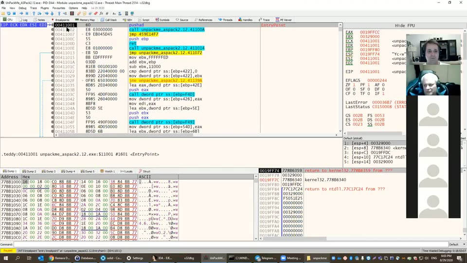
Era la primera instrucción que ejecutaba un programa. Pero el entry point real, si se fijan en el mapa de memoria Acá estamos parados en lo que teóricamente debería ser el oep de un programa Pero en realidad no es el entry point porque no está en la sección Donde está el código original del programa. Si miran el mapa de memoria acá Ven, acá está el archivo, está mapeado acá O sea, sería esta es la image base, está en 400.000 Estos primeros mil bytes serían el pheader Que yo ya lo expliqué en el video Y después vienen las secciones Como ven, acá van a notar algo distinto Que en teoría, por lo general, en un programa normal La sección .text, que es donde está el código Es la que está contigua al pheader O sea, a los primeros mil bytes Pero esto como está empacado Y tiene muchos chanchuzos que le ponen Bueno, no es así Ven, ahora El programa está ejecutando acá Donde está marcado en negro En esta sección que se llama .teddy Ven Que empieza en 411.000 Y tiene 3000 bytes de tamaño Ven acá, estamos en 411.001 ¿Sí? Entonces En realidad el código ejecutable Debería estar en esta sección En la .text Si yo hago acá, clic derecho Following Disassemble O sea, en la sección que empieza en 404.000 Si hago Following Disassemble Veo que acá Si más o menos vieron un poco lo que es Assembler Acá pueden pasar dos cosas O que sean todos ceros Que no haya nada O que haya basura En este caso Una cosita Una cosita Disculpamos que te interrumpa Hay varios que dicen que le está esperando Que el anfitrión los permite ingresar Fijate si tienes alguno para Sí, porque no sé Porque me pide Debe haber alguna manera Para que no pida permiso No pida Bueno Ahora les va a dejar entrar Admit all Ahí los admití a todos Quiero ver cómo se puede sacar eso A ver Espera Sí, ahí están entrando Sí, porque se ve que tiene Que es la primera vez Ahí está Le destildé una opción que dice
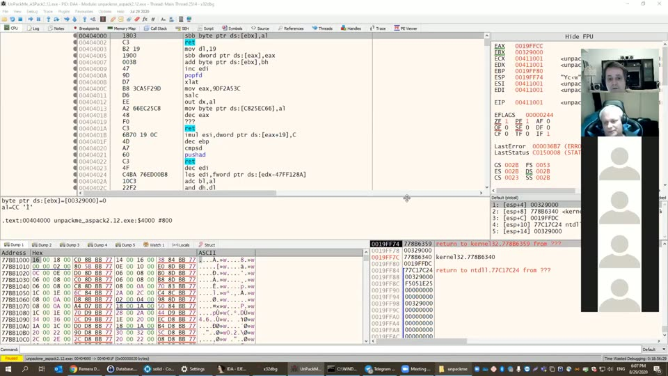
Enable Waiting Room Supongo que Al no estar el Waiting Room No Bueno, si alguien sabe Cómo hacer Fijate cada tanto Si te aparece alguno Si te aparece alguno ahí Bueno Listo Seguimos Bueno, entonces Bueno, entonces Como ven acá Esto es basura Ven las instrucciones Salk Out Signo de pregunta Esto se ve claramente Que no es código Ven que las instrucciones Son basura Que hay en la memoria Seguramente Cuando el programa Se empieza a descomprimir En esta sección Va a escribir El código verdadero Del programa Y cuando termine de hacerlo Va a saltar a esta sección Y va a empezar a ejecutar ¿Sí? Ahora Vamos a Donde estábamos parados Apretando asterisco Acuérdense que Apretando asterisco Vuelven a donde Marca EIP Que es el Instruction Pointer Que es 411.001 Que es la instrucción Que se va a ejecutar En este momento Hasta ahora No hicimos nada Estamos parados En el Entry Point ¿Sí? Del programa Que se está ejecutando En la sección Del pack Y lo que Nosotros Realmente Nos interesa Es Llegar A la sección De Punto text Acá A esta sección Parar acá Cuando Ejecute La primera instrucción ¿Sí? Cuando Cuando el packer Termine de hacer Todo su trabajo Y escriba En esta sección Punto text Todos los bytes Original Del programa Nosotros Lo que Tendremos Que hacer Es Un volcado De la memoria ¿Sí? Para tener El archivo Limpio Sin esta parte Digamos Entonces De esa manera Podemos Hacerle cambios En el disco En el disco Ni nada Ni nada Ni nada Ni nada Porque acá O sea Como yo todavía No tengo El código Fuente Del programa El código Este es el Del packer No es el Del programa Entonces Si yo Si yo voy A la sección De acá Donde debería Estar el código ¿Sí? A mí esto No me sirve Porque es basura ¿Sí? Entonces Lo que yo Tengo que hacer Es Esperar Que el programa Termine Es comprimir Todo Escribirlo En esta sección Y después Hacer un Volcado De memoria Para que arranque Desde el OEP Que es el Original Entry Point Que sería El entry point Original Del programa
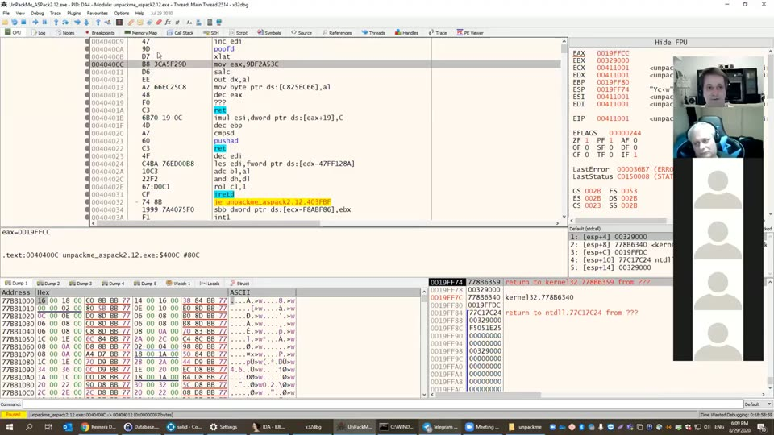
Verdadero ¿Se entendió? Hasta ahí Si no Bueno Después Este Pregunten Cualquier cosa ¿Eh? Pero tiene manito ¿Tiene manito Para preguntar? O chat Está el chat Hay un chat Voy a ver el chat A ver si hay algo Esperá A ver No Parece que no Bueno ¿Tiene alguna pregunta? Creo que mano No sé si hay acá ¿No? A ver Quiero ver si Hola Hola Sí Sí Cualquier cosa Pense y pregunten Y después vuelvan Yo tengo una pregunta Para Yo saber Que es Que es un Que está El ejecutable Empacado Es justamente Lo que tú Estás explicando Ver En qué sección Se arranca Mira Esa es una De las formas Tenés programitas Que vos le tirás El ejecutable Y te dice Está empacado Con tal packer O no tiene nada Está hecho En Visual Basic O lo que sea Se llama ¿Cómo se llamaba? Ricardo ¿Te acordás vos? Bueno Hay varios Esperá Porque hay Ahora Antes había uno Llamado P-E-I-D Así Fade ¿Así? Y eso Cada tanto Después salió Otro más nuevo Que está actualizado Después está RDG Packer Detector Hay varios Después salió Hace poco Salió uno nuevo Que estaba Sí Sí Pero yo no me acuerdo El nombre Pero para hacerlo manual Es lo que explicaste ¿Verdad? Para darte cuenta De forma manual Vos vas al mapa De memoria Y te fijás Ves que acá está Marcado en negro Quiere decir que El programa Arranca acá Y esta es una sección Que se llama TEL Y la sección Del código Realmente Es la que La punto text ¿Sí? Ok Eso En la mayoría De los packers Pasa así Puede haber alguno Que por ahí No En general pasa así Pero igual Cuando vos ya Desesamblaste Muchas veces Muchos programas Y ves Cómo es el entry point Te das cuenta Si está empacado O sea No Yo No No conozco Ningún programa Ningún compilador Que empiece con push-up Por ejemplo No empiezan con esta instrucción ¿Entendés? Eso después Con la experiencia Te vas dando cuenta solo Así a simple vista Te das cuenta Que esto está empacado Porque ningún programa
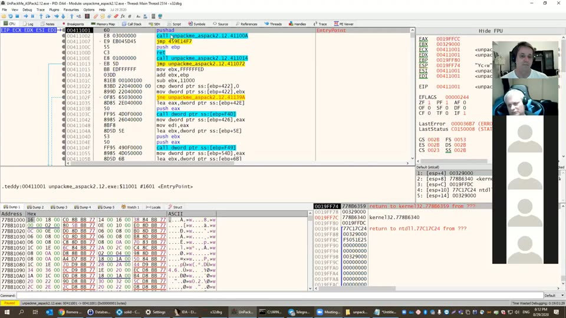
Ni en Assembler Ni en Visual Basic Ni en C++ Ni en Visual C++ Ninguno empieza con push-up Así que acá Ya ves que hay algo raro ¿Sí? En general Lo que usan push-up Es para Guardar en el stack Todos los registros Antes de hacer Toda su Desempacada Y con popas Después los vuelven a restaurar Y entonces Esto es una cosa Que hacen los packers Normalmente No lo va a hacer Un programa Digamos Normal Claro No entendí esa parte Que dijiste Del volcado de memoria Pero ahora lo vamos a hacer Mirá Yo te explico Vos pensás una cosa El código Del programa original Se va a escribir acá En esta sección Una vez que Todo esto Que el packer Que es esto Termine de Descomprimirlo O sea Esto Esta rutina del packer Que no sé lo que hace Ni me interesa Yo lo único que sé Es que esto Va a descomprimir El código Real del programa Y lo va a ir escribiendo Acá en la sección Del text ¿Sí? ¿Y qué pasa? Si vos quisieras Parchar el programa Vos no tenés nunca El código Porque Yo lo voy a ejecutar Mirá Para explicar una cosita ¿No? Yo Digamos Esta es la sección Del código Yo voy a ejecutar El programa Acuérdense 404.000 Yo voy a apretar F9 O dar run Bueno Y ahí el programa Arrancó ¿Sí? Y ven que acá Ya veo Call Veo instrucciones O sea que son Realmente Que tienen sentido Porque el otro Realmente no tenía sentido ¿Ven? Entonces ahí ya El programa ya escribió Ya escribió en el código Entonces Yo lo que tengo que hacer Es volcar Toda esta parte Que cuando estábamos Al principio No la teníamos Porque todavía No estaba desencriptada Entonces Es como esperar Que el programa Que te haga todo su trabajo Y cuando llegas Al punto Que se va a empezar a ejecutar Guardarlo en el disco Hacer un archivo nuevo Claro Y que arranque Desde acá ¿Entendés? Entonces Porque ¿Qué pasa? Si yo Por ejemplo Fíjate Esta dirección 40 41 7 ¿Ves? Lo que hay Un push EBX Si yo reinicio Y voy ahí 40 41 7 ¿Ves? Lo que hay ahora Y cualquier cosa Porque todavía No se escribió El código Entonces esto No me sirve Si yo quiero Parcharlo
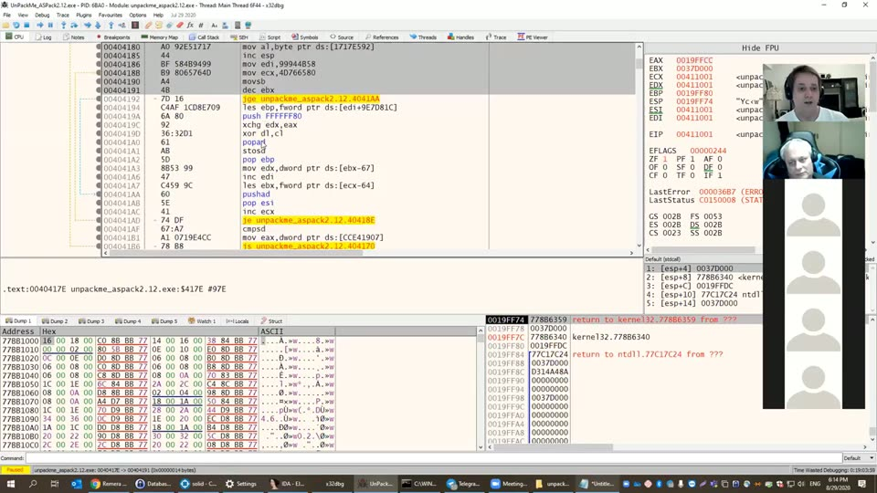
No lo puedo Parchar nunca El programa Porque El código Original del programa Está en la memoria Nada más En el disco No está En el Excel No sé si se entiende Claro En tiempo de ejecución Se arregla En tiempo de ejecución Y vos ¿Cómo lo vas a modificar? Solamente que lo modifiques En tiempo de ejecución También Pero eso se arma En tiempo de ejecución Entonces Lo que nosotros Tenemos que lograr Es Encontrar Cuando termina El packer De hacer toda Su rutina De descompresión Cuando termine De hacerlo En algún momento Tiene que saltar Al código Del programa Original Que va a estar acá Y si nosotros Interceptamos Justo ese punto Vamos a estar En el OEP O sea En el Original Entry Point Que sería La primera instrucción Real Del programa Que se va a ejecutar El packer No nos interesa Lo que hace Lo que sabemos Que va a hacer Es que va a descomprimir El código verdadero Y lo va a escribir acá ¿Sí? Así que bueno Hay muchas maneras De encontrar El OEP Una de esas Es por ejemplo Poner un Breakpoint Memory Que x64dbg Tiene esa opción Que es buenísima Y podemos poner Un Breakpoint Memory Acá O NACS O NRAI Para que pare Cuando O un EJECUTION Para que pare Cuando va a ejecutar Cualquier instrucción De esta sección Que en teoría Cuando termine Descomprimir el packer Va a saltar acá Y va a ejecutar El programa ¿Sí? Entonces podemos Hacer clic derecho Memory Breakpoint EJECUTION Single shot Le pongo Porque Cuando para la primera vez Ya directamente Va a ser Cuando va a ejecutar Y acá está pausado En el Digamos En el entry point Del programa Ahí Como lo arrancamos Al principio Ahora yo Le voy a dar run Capaz va a tardar Un poquito esto Le doy run Y ahí está Del programa Está corriendo ¿Ven? Y ahí paró ¿Ven que ahí pausó? Y dice Memory Breakpoint Execute Y estoy en la sección Del código 404.000 ¿Ven? Ahora estoy acá ¿Sí? O sea que Esto Terminó de hacer Todo su trabajo Escribió acá Y al final Saltó a ejecutar El código Del programa Original ¿Sí? El tema Es tratar De parar En ese momento En el momento Que salta ahí A ejecutar Después de que ya Terminó Hacer todo su trabajo Deja el programa Como era original En la memoria Entonces saltar ahí
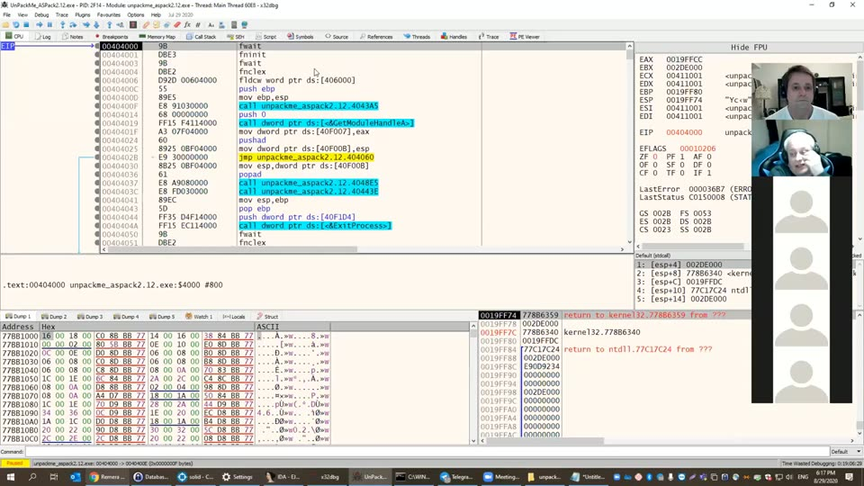
Es el punto Que nosotros Queremos interceptar De todos modos Ustedes fíjense Que Bueno El que está acostumbrado A ver Este Este entry point También es raro Sin embargo Estas instrucciones Son Son Son muy raras Por lo menos Estas Las primeras Ya de acá Parecería que Se empieza a normalizar Pero bueno Acá según Lo que pasó En el debugger La primera instrucción Que va a ejecutar Es esta El programa verdadero Así que A partir de acá Yo podría hacer Un volcado De la memoria Entonces Con este Hay un plugin Que ya lo trae X64 Que se llama Scylla ¿Sí? Entonces yo Lo que voy a hacer Es Hacer un Dampeado O sea Voy a volcar La memoria A partir de acá De esta dirección Primero tenés que elegir En la lista de procesos En la lista de procesos Tenés que elegir Acá está Ya estaba Estaba seleccionando Ah ya estaba Ah bueno Un pagme Marcalo Ahí está Bueno Pará Que se me fue de acá El coso Del entry point Ya automáticamente Ya automáticamente Te lo selecciona Ven El OEP 404.000 Es este Y yo Lo Dampear Dampear es volcarlo Yo Agarro Todo esto Que está en la memoria Y lo copio En un exe En el disco Eso es Dampear Ven Lo voy a copiar Acá en la misma carpeta Y me lo hace Con un nombre Me agrega Dampe Y lo guardo Bueno Y ahora lo que tengo que hacer Es agregar la IAT Porque Los packers Destruyen la IAT Eso después Lo vamos a explicar Más adelante Cómo es el funcionamiento Pero ustedes Lo que tienen que hacer Es reconstruir la IAT Entonces yo tengo Este botoncito acá Que por lo general Disculpa Solide ¿Qué es la IAT? La IAT Es la Importable Address Es Es una A ver Como una tabla Donde están todas las direcciones De las funciones Que llama el programa Por ejemplo El campo ese Figura en el P Header Pero si por ejemplo Acá Ves que tenés Un llamado A una API Que es GetModuleHandle ¿Sí? Si yo le hago acá FollowWindam Constante ¿Ves? Y esto lo cambio
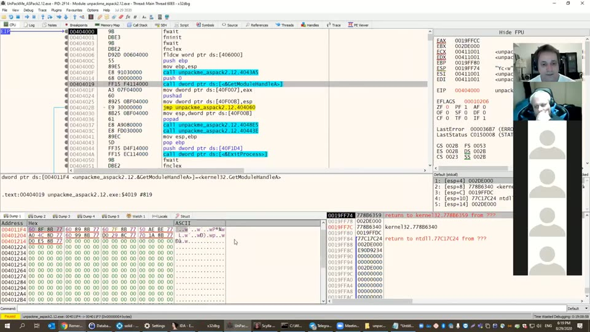
La vista A Address ¿Ves? Que es una Es como una tabla Donde están todas las direcciones De las funciones ¿Sí? Esto lo rellena el programa Cuando carga En esta dirección Guarda la dirección De esta API En esta Esto es para que funcionen Todas las máquinas Porque Estas direcciones Pueden cambiar Depende la máquina Depende la versión De Windows No son las mismas ¿Sí? Eso lo hace Con un resolver El sistema ¿Sí? Y entonces Cuando Cuando se carga Rellena Todo Estas direcciones 4011c Con Direcciones De las funciones Del sistema ¿Sí? De Windows ¿Sí? Esa es la IAT Es como una tablita Que necesita Para que todo sea compatible O sea Si vos Tenés que llamar A GetModuleHandleA Y en una máquina Tiene una dirección Y en otra máquina Tiene otra No va a funcionar Entonces La única forma Es guardar un lugar Como un cajoncito Donde el tipo dice Bueno A ver cuánto vale GetModuleHandleA En esta máquina Tal dirección Entonces lo guarda Y entonces Ese cajoncito Es constante Para el programa Siempre tiene el cajoncito De GetModuleHandleA Y eso es parte De la IAT Entonces Ahí guardan El sistema Todas las direcciones De las APIs Claro Entonces Bueno Ahí Perdón Entonces Acá Estábamos con el SILA Lo que yo puedo hacer Lo que yo tengo que hacer Es agregar la IAT Entonces yo Tengo este botón Que en los packers fáciles Como este funcionan Que le doy IAT AutoSearch ¿Sí? Y me dice Que empieza en 4011.9c Y que tiene un largo De 124 Vamos a ver Si es cierto 4011 Esto siempre Cuando busco Yo puedo cambiar La vista Acá Clic derecho Adres Y me muestra Me reemplaza Las direcciones Por los nombres Acá ven que en 4011.9c Realmente Tengo una función Una API ¿Sí? Y si sigo bajando Acá hay basura Y acá hay más Y acá hay más Por eso Estas cosas A veces engañan A estos programistas Entonces hay que mirar bien Un poco más arriba Y más abajo Para ver si realmente No hay más Acá aparentemente No, empezaría acá Yo hago doble clic Acá Acuérdense Que veo la dirección Relativa O sea Acá tengo 4011.9c Y si quiero saber El largo Terminaría acá En 78 7c
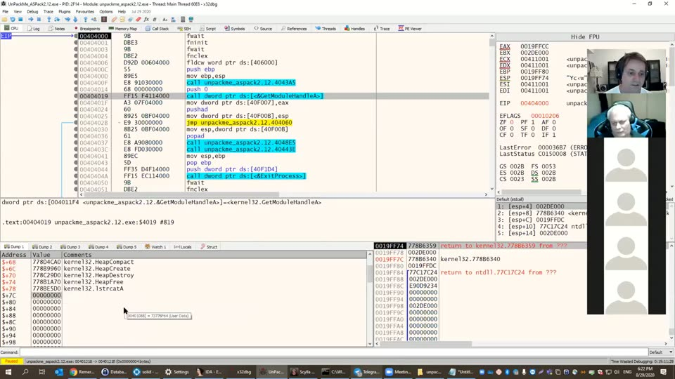
Le puedo poner Un poquito más 7c Y acá me dicen Ven Empieza en 4011.9c Y tiene un largo De 7c Acá se dio cuenta Y la encontró bien Pero si eso no funcionara Yo tengo otras maneras De buscarla La busco a mano ¿Sí? Como hicimos recién Agarrando una cualquiera Haciendo Following down Following down ¿Sí? Constante Y ahí voy a estar En la zona Porque siempre está Todo junto O sea Esto es Es un pedazo Es una tabla Que está Toda continua Digamos Y están separadas Entre Entre DLL Y DLL Porque Cada función Hay funciones Que pertenecen A una DLL Y otras a otra Están separadas Por cero Tienen que estar Ven Acá está user Después hay una Separación de cero Bueno Acá hay basura Pero tranquilamente Podría haber Las funciones De otra librería Acá están Las de kernel Y así Entonces Bueno Ya le di IAT Autosearch Entonces Luego Al botón este Get Import Y bueno Me encontró esto Por las dudas Puedo apretar ese Que me muestre Si hay alguna inválida En este caso En este caso No hay ninguna Entonces una vez Que ya tengo La IAT Le doy al botoncito Fix Dump Y selecciono El que dampee recién Que es este Dump Le doy open Y bueno Ahí en teoría Ya estaría reparado Vamos a probarlo Yo voy a cerrar Acá Y fíjense Que el archivo El que está Desempacado Es más pesado Porque el packer Lo que hace Comprime el código También En realidad Originalmente Los packers Se hicieron Para comprimirle El código Como si fuera Un zip Pero bueno Después se dieron Cuenta Que eso servía También para evitar Que la gente Tuviese el código Fuente Y poder Crackear Y empezaron A hacer un montón De chanchullos Este si yo lo ejecuto Con doble clic Debería funcionar Ven Ahí funcionó Si Es lo mismo Que este Mostrá Lo que Ese Como empieza Ese Lo voy a mostrar Ahora Si yo este Lo abro En x64 Lo que me hace También Me cambia El O sea Cambio esta vista X Los podés
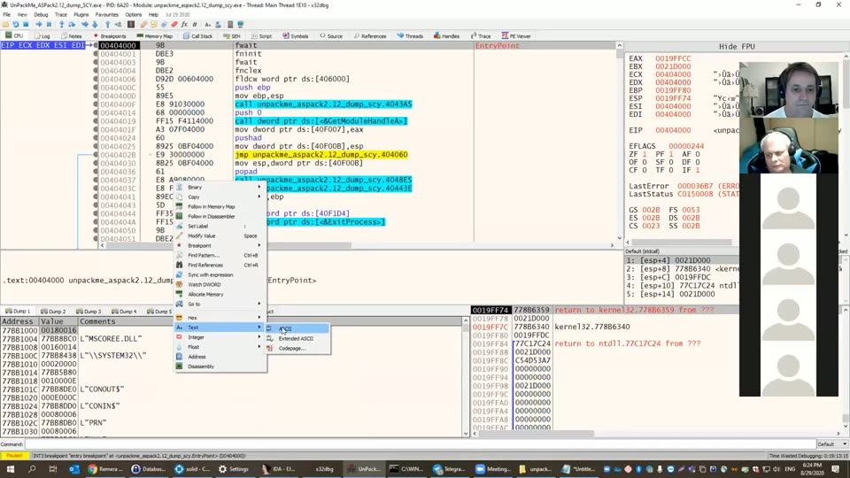
Comparar Con el otro Por ahí Si Ven que este Arranca En 404.000 Si me fijo En el mapa De memoria Es la sensión Text Si Esta sensión O sea Ni arrancó Acá O sea Que no lo ejecutó Después hasta La podría quitar Esta sección Con un editor PE La podría borrar Para que El archivo Me quede Más chiquito Pero ven Que ahora El programa Arranca acá Si Si nosotros Hubiésemos Hecho algo mal Si este No sería El OEP O tuviese Alguna otra cosa El programa No funciona Y fíjense Que yo lo ejecuté Y funciona Perfectamente Ahí lo ejecuto Y funciona Quiere decir Quiere decir Que el desempacado Está bien Ahora Lo vamos a comparar Con el original Este sería Con el paqueado Con el original Con el paqueado Si si Este es el original Y este Y este es el En que está empacado Bueno Como pueden ver Este El de la derecha Es el que está empacado Empieza En la sección Que está En 411.000 Con un pullar ¿Ven? 411.000 Que es esta sección Y el que está Desempacado Empieza en la sección De 404.000 En la sección De código ejecutable El punto text ¿Ven? O sea que Evitamos Todo esto O sea Lo que hicimos Fue Volcar en la memoria Cuando el código Ya está Decomprimido Y lo que le hace El SILA Le cambia La dirección Del Entry point Que tenía acá Por la del OEP Entonces el programa Ya directamente Arranca acá Y todo esto No lo ejecuta Porque no lo necesita ¿Se entiende eso? Esa es la diferencia Acá Yo puedo parchar Todo Guardar los cambios Y está Acá no puedo Porque no tengo el código Esa es una de las maneras De llegar al OEP Poner un breakpoint memory On execution En la sección del código Hay otras Porque a veces Eso no funciona Hay muchos métodos ¿Se entendió? Ahora pregunten A ver A ver si hay gente Para entrar O Ese Bueno Te están preguntando Que packer es ese Este es Aspac Y ponle el link Ahí en el chat Ponle el link En el chat Que quieren también El link Esperá que quiero Quiero ver esto A ver si hay alguien Que está para entrar
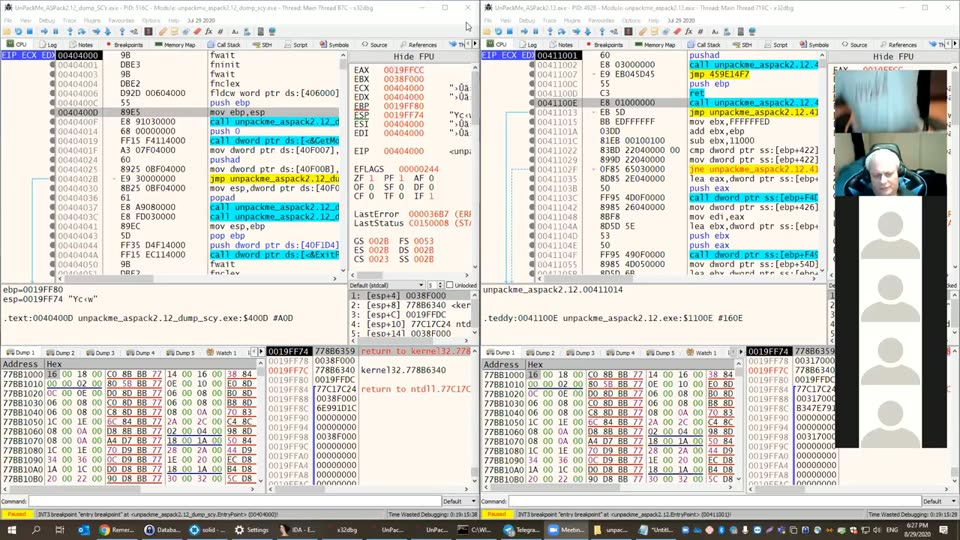
Y no puede A ver Parece que no Están todos Ahora Porque yo le saqué La opción Eso Ahora lo paso Lo paso el link Ahora Estaba entre los tuyos Acá el sólido Ah El link Están los ejercicios Están los ejercicios Que subimos del curso No los llegamos a ver Pero está el ejercicio Ahora le paso el link De vuelta Bueno Que que pregunten Algo de esto Si quieren preguntar Porque Ahí está el unpacker Una vez que entienden Esto Pueden agarrar Cualquier packer Y desempacarlo Obviamente Que hay algunos Que son más difíciles Pero lo importante Es que entiendan Cómo es el funcionamiento O sea Sería Lo voy a ver Si lo explico acá Con el node Yo explico todo Con el node Un ejecutable Si Tiene secciones Si Que yo Los primeros milby Son del header Si Después viene la sección Punto text Punto data Punto r data Punto resource Estos pueden tener Otros nombres Y distinto orden Como vieron recién ¿No? Entonces Y cuando está empacado El código Del programa Estaría acá ¿Si? Y una vez que se termina De ejecutar Esto Salta el programa Y viene acá Al OEP Este sería el OEP Y este sería el EP El EP sería El entry point Del packer Del packer Y el OEP Sería el original Entry point O sea El entry point Verdadero del programa Cuando está descomprimido ¿Si? Y después Y después Bueno Lo que hay que hacer Sería entonces Llegar al OEP Que es la primera ¿Si? ¿Si? Y una vez ahí Hacer un volcado Y después Y después Reparar La La IAT Con Silla
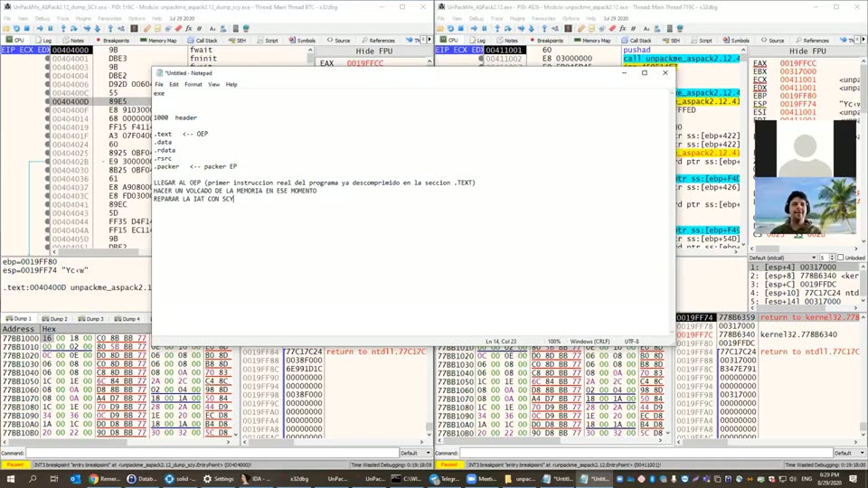
Eso sería Eso sería El proceso ¿Si? Ustedes Sabiendo eso Pueden Desempacar Cualquier cosa Obviamente Que hay packers Que son Muchísimo Más Complicados Pero Si Si entienden Cómo es el funcionamiento Algunos Le van a llevar Un mes Otro Un ratito Otro Seis meses Hay packers Que la complican más Hay packers Que la complican más Que te destruyen Completamente La IAT El Silla Cuando vas a A buscar la IAT No te la encuentra Tenés que arreglar Cosas a mano O sea Es una ciencia Obviamente Sí, sí, sí Tal cual Bueno A ver ¿Quién tiene preguntas? Preguntas ¿Ustedes es el que quiera preguntar? No se quedó nadie afuera ¿No? No, yo no veo Que haya quedado Alguien afuera No, parece que no Alguien que tenga Alguna pregunta Pregunte Así aprovechamos Pregunten Porque esto No se queden con dudas Porque esto La verdad que es importante Esto es importante Saberlo O sea Saber el funcionamiento ¿No es cierto? ¿Todos entendieron? Qué maravilla Bueno, está Ponele Ponele ahí Ponele Exescripto Yo tengo una pregunta ahí O solo para entender Nomás Al momento que Se baja El El volcado Sí Es como que Estuviese bajando Un pedazo de código Y después Volverlo a restaurar ¿No es cierto? Mira Te bajas esto La memoria ¿Ves? La memoria Desde acá Todo lo que abarca El archivo Sí Bueno, acá Ya está volcado Vamos a ver acá Ven que acá Tiene una sección nueva Que este no lo tiene Esta S-C-I Es la sección que le agregó S-I-L-A Y que es donde puso la I-A-T ¿Sí? Ok Tiene esa sección nueva Pero lo que vos estás volcando Es el contexto del proceso que estás viendo O sea, desde acá Desde 400.000 Hasta donde termina Estás acá 401 FFFF. Es como que copia toda la memoria que hay en ese momento a un archivo. La copia toda a un archivo. Todo esto de acá, esto es memoria y iByte. Esto lo copia en un Excel. Es como si vos seleccionaras toda esta parte de la memoria y lo guardaras en un Excel. Y le cambia el entry point de acá al verdadero, digamos. Entonces el programa va a arrancar de acá. Esto no lo va a ejecutar.
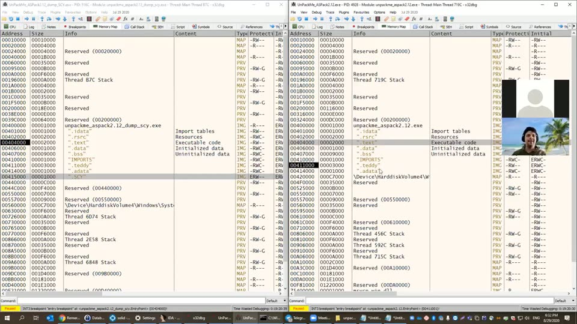
Seguramente que si lo vamos a ver sigue estando eso. Ahí está. ¿Ven? El pushad, está todo esto. Este es el desempacado. Fíjense que está el código del packet, pero acá no lo usa porque ya directamente el SILA le cambia la dirección del entry point y arranca en la sección del código. La idea es que cuando uno tiene el programa ya desempacado lo puede parchear, lo puede analizar y lo puede mirar. Si no lo tenés desempacado no podés mirarlo. Claro, porque no tenés el código. Hasta que no está en la memoria no tenés el código. Ahora sí ya lo tenemos en este archivo nuevo. Soli, te hago una pregunta. Sí. Es algo que dijiste en el curso, pero que está relacionado un poco con esto. El XDBG te muestra la dirección del entry point una dirección determinada. Sí. Pero 40, 4.000. Sí. Cuando el binario no se ejecuta con el DBG. Sí. ¿Realmente se ejecuta en esa dirección? Porque yo me acuerdo que vos habías encontrado una dirección a donde saltar, pero cuando está el debugger puesto en Linux a veces no es la misma. Mirá, la dirección del entry point, el debugger la saca del P-Header. Fíjate, vamos a, no sé si tienen puesto el plugin este, P-Header, van a ver que la dirección, este es el, a ver, este es el dampiado. Van a ver que seguramente este va a tener la dirección del entry point del nueva, digamos. A ver, a ver dónde está. Address of entry point, ven, 4.000. ¿Sí? 4.000 más la imagen base image base, 400.000, sería 404.000. Entonces, ven, es 404.000. Y si vos agarrás el este, que sería el que está empacado, digamos, el original, vamos al al P-Header, espera, al P-Header. Igual, los packers destruyen el P-Header también y le hacen un montón de chanchada, vamos a ver si está bien. Pero, suponemos que address of entry point, 11.001, más 400.000, ¿cuánto es? 21.001. Claro, pero es una, es una dirección relativa a ese 400.000. Cuando se ejecuta
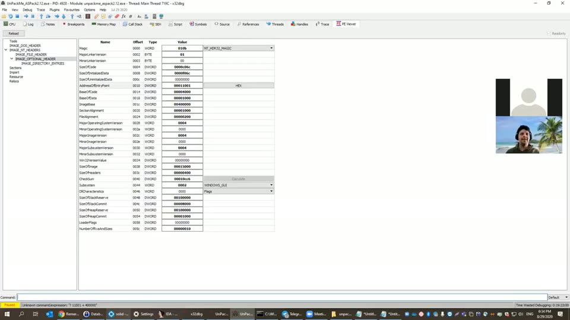
normalmente, la base cambia? Y puede cambiar, puede cambiar por la, randomizado, si tiene SLR, sí, se puede ejecutar en otro lugar, pero no, no tiene nada que ver, porque estas direcciones de memoria son relativas, o sea, el entry point y el OEP siempre va a ser relativo a la imagen base donde está cargado el Excel. Ahí te dice 4.000, 4.000 más 400.000 son 404.000, si está cargado en otro lado va a ser 4.000 más la base que esté en ese momento. este dijimos cuánto era que decía 11.001 sería 411.001 y este en realidad arranca en 411.001, o sea, eso lo saca D, ahora, si esta image base fuera distinta, fuera aquello en 700.000, estaría en 711.001, ¿entendés? Porque la dirección esa es relativa, es una dirección. Relativa a la base, la base cambia pero se le suma siempre la misma distancia, digamos, distancia de atrás. La pregunta era en el que Ricardo abrió la calculadora usando la dirección de una función que estaba... en el exploit, decís vos. Sí, en el exploit y usó una dirección que estaba... Bueno, lo que pasa que en ese caso, ¿cuál era el system que tiene system? Sí, el que tiene system. Que tiene ppdl. Bueno, lo que pasa es que esa no tiene randomización, como no tiene randomización, buscamos una que no tenía randomización para saltar directamente y hacerlo más fácil. Entonces, como esa ppdl está compilada haciendo randomización, siempre la dirección va a ser la misma. Pero si tiene randomización, la tenés que resolver, la tenés que resolver en el momento y tratar de hallar la dirección y después saltar. Igual estás acá de la IAT ese system, no es jarcodeada. Lo que está jarcodeada es la dirección del código donde está... donde está... donde la llama, digamos. Está bien. ¿Entendés? Yo preparé un saltito para que ya directamente haga cola ahí, pero se puede saltar directamente también, porque es una dirección fija. La de la ELESA no tiene randomización. Entonces, como no tiene randomización, su dirección es fija. Entonces, podés saltar ahí. Si no, tenés que calcular o hacer otra cosa para saltar. No vamos a complicar ahora, no vamos a complicar ahora con eso. ¿Qué más? Y preguntas,
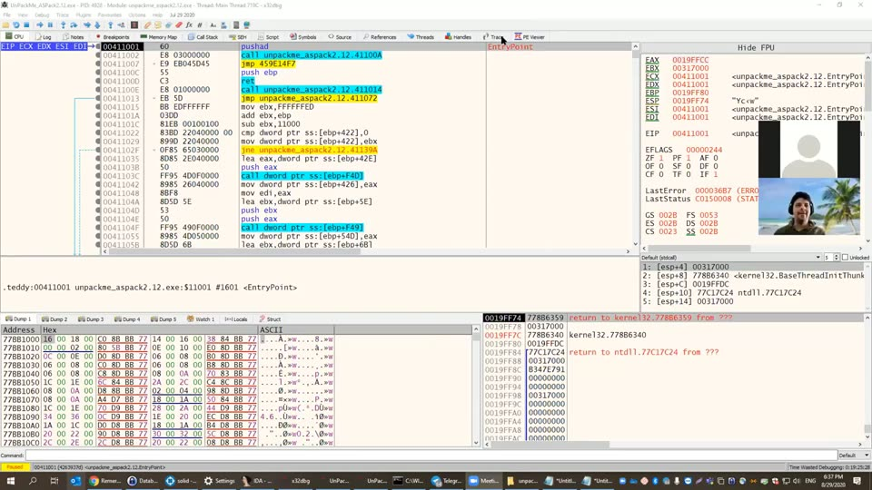
preguntas. ¿Quién quiere hacerlo? ¿Alguien no quiere hacerlo? Este está bueno para practicar. O sea, otra... Si quieren, le muestro otra forma que creo que esta la descubrió Ricardo. Cómo llegar al OEP. Por ejemplo, acá estamos en el que está empacado, ¿no? Entonces, como dijo Ricardo al principio, ¿no? Cuando alguien hace un push-add es porque seguramente va a ser chanchada y va a tener que toquetear todos los registros y al final, cuando termine de hacer todo, va a ser pop-up para recuperar todo esto y que quede como estaba, ¿sí? Entonces, si nosotros, después del push-add, yo aprieto F7 acá, ¿sí? Y le pongo un breakpoint memory on access a SP, acá, SP. Como guarda todos los registros en el stack, después lo va a recuperar en algún momento. El push-add es guardar los registros en el stack. Entonces, si vos le pones un breakpoint, cuando lo recupere, va a parar. Yo le pongo acá un breakpoint. Breakpoint hardware on access, vamos a ponerle. The word. Entonces, ahora le doy run y va a parar cuando haga el pop-up, seguramente. Entonces, aprieto F9 y ahí paró. Acuérdense que los hardware breakpoints siempre paran una instrucción después. O sea, paró acá y acá está el pop-up. ¿Sí? Ahí recupero los registros que estaban al principio. Y si yo ahora traseo, fíjense que aprieto F7 y hace un push de esta dirección, 404.000 y red. Esto es lo mismo que hacer un salto a 404.000. Y ahí, digamos que pasaría de la sección del packer, acá ya terminó de hacer todo, a la sección del ejecutable que está en 404.000. ¿Se acuerdan? ¿Ven? 404.000. Entonces yo ejecuto eso y ahí llegaría al OEP. Esa es otra forma de llegar sin poner un breakpoint memory. Hay packers que ya saben que la gente sabe el truquito del push-up-up, entonces empezaron a quitarle el tema de ya no usar push-up-up para tratar de evitar que los detecten tan fácil. O sea, en una segunda generación los tipos dijeron, no, no, bueno, no vamos a usar push-up-up-up porque si no nos detectan enseguida. Pero los primeros tenían esos truques. Pero hay otra, hay miles de formas. Por lo general, esta API, GetModuleHandle, la mayoría de los compiladores cuando arrancan es a lo primero que llaman.
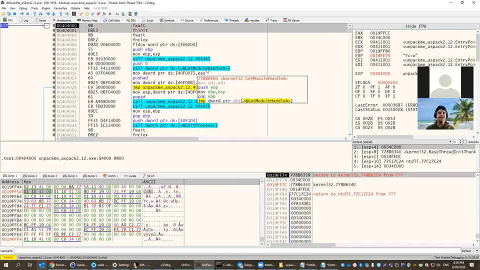
Entonces también se podría poner un breakpoint acá y ver desde dónde fue llamada. Y ahí más o menos vas a estar cerca. Hay un montón de maneras. Pero bueno, lo importante es que ahora es que entiendan cómo funciona. Después ya vamos a ver cosas más sofisticadas, ¿no? Y lo que yo digo, siempre, cuando van a resolver algo, siempre empiecen por lo más fácil. No se compliquen la vida tratando de buscar cosas raras. O sea, si yo quiero parar en el momento que va a ejecutar acá algo del código, lo que hago es que le pongo un breakpoint memory on execution en esta sección y a la lona. Si funciona bien y si no, ahí buscaría otra cosa. Pero siempre primero empiezo por lo más fácil. No hay que complicarse la vida. Bueno, no sé quién preguntar más algo, sino que siga Ricardo con el ejercicio. No, no, no, no, seguí, seguí vos, vos que tenés todavía ahí para mostrar el script. Aló, buenas noches. ¿Sólid, se me escucha? Sí, sí, perfecto. Vale, un favor. ¿Podrías explicar cómo funciona eso, los memory backpoints de forma interna? Eso siempre se me complica porque en Oli creo que funciona de otro modo, en X64 a veces no funciona. Entonces, ¿qué es lo que hace de forma interna un memory card? Mirá, en Oli lo que hacía es que le cambiaba el permiso a la sección. O sea, a toda la sección. Si vos ponías un breakpoint memory, por ejemplo, on access en esta sección, lo que hacía es que le cambiaba el permiso. En realidad a la sección, a los bloques de mil, al bloque de mil, depende de dónde lo ponías. Entonces, ¿qué pasaba? Cuando vos ponías un breakpoint, al cambiarle el permiso, cuando quería leer ahí, se genera una excepción. Entonces, levantaba la excepción y el tipo se fijaba dónde era. Por eso es también que se podía poner uno y después, viste, ya no... O sea, más de un breakpoint memory por vez no podías poner. Y la verdad que X64, no sé cómo hace, pero está buenísimo porque podés poner todos los que quieras, incluso on execution. Eso está buenísimo. Hay algunas cosas que no funcionan cuando le pones un breakpoint en una parte, digamos, chiquita. A veces eso no siempre funciona. Hay cosas que todavía están ahí, digamos, medio para preparar. La honestidad que te digo, no sé cómo funciona por debajo. Pero debe ser algo así. O sea, vos tenés que pensar que si querés poner un breakpoint en 4 bytes
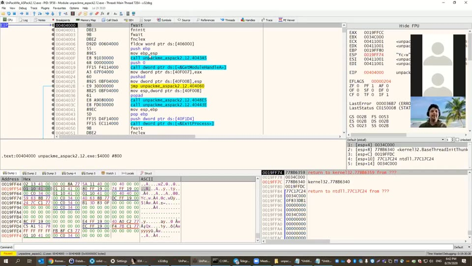
y le pones un breakpoint memory, qué sé yo, on write, para que pare cuando escribe, ¿qué va a hacer el tipo? Le va a cambiar a esa zona donde están esos 4 bytes, no le va a dar permiso de escritura. Cosa que cuando el programa trate de escribir, va a parar. El problema es que le va a cambiar no solamente 4, va a cambiarle el permiso a toda la sección. Porque no se puede cambiarle solamente a 4. Entonces lo que va a hacer es que cada vez que pare ahí escribiendo, va a manejar esa excepción y va a decir, a ver, ¿dónde está escribiendo? Cuando maneje la excepción. Porque le dice dónde se generó la excepción. Entonces dice, ¿dónde está escribiendo? ¿Dónde yo quiero? Si está donde yo quiero, paro. Y si no, continúo. Y así, va chequeando, va chequeando. Y bueno, a veces puede fallar, ¿no es cierto? Lo mejor para hacer eso es agarrar y devaguear el mismo debugger. Uno puede agarrar un debugger y devaguear el debugger. Entonces cuando va mirando qué hace, eso hacíamos nosotros con el Oli. Lo devagueábamos y decíamos, a ver, ¿qué hace? Pará, el Oli los Breakpoint Memory los guarda en una parte y vos los podés detectar. O sea, ahí no me acuerdo cómo era, me tendría que fijar. Lo tengo notado. Vos podés ver si alguien puso un Breakpoint Memory en Oli porque lo tiene guardado. Ahí en una variable los guarda. Por algún lado está. Bueno, mostrale eso, Soli. Esto es como un comentario para que vean que se puede automatizar. Por ejemplo, en este packer es sencillo. Entonces yo, no pasa nada, lo puedo hacer a mano. Pero a veces hay packer que hay que hacer un montón de cosas para llegar al OEP o para arreglar una IAT o para recuperar pedazos de código que se afanó. Entonces, ahí podemos hacer script. En Oli teníamos un plugin que se llamaba ODBG Script, que era bastante intuitivo y era todo con instrucciones más o menos así como el Assembler. Y a X64 trae este que se llama script, que también ustedes en un TXT pueden escribir. Y por ejemplo, yo hice un script, lo estaba empezando a usar porque la verdad que nunca lo usé con X64 para practicar. Y acá me hice un script para llegar al OEP de esto. Entonces, yo lo voy a cargar, a ver si lo encuentro.
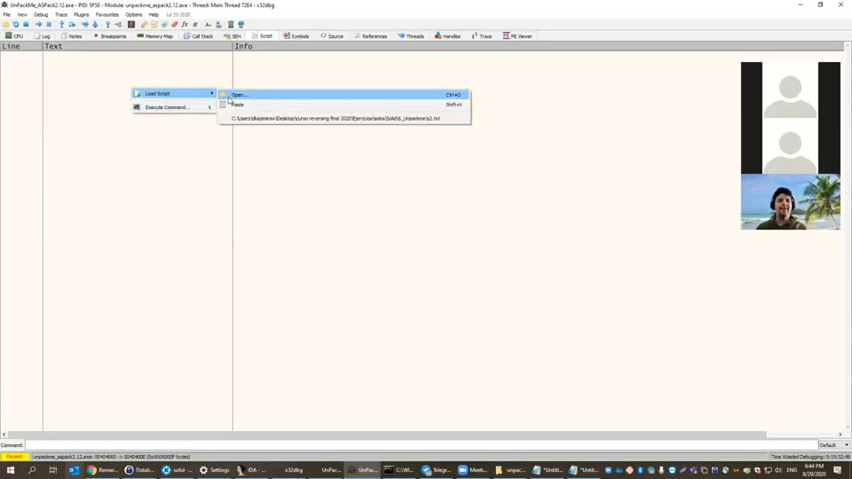
Open. Es un lenguaje como una especie de pseudocódigo muy sencillo. Este me lo hice y es así. O sea, en la documentación de X64 ustedes tienen lo que hace cada cosa. Yo más o menos lo sé porque es muy parecido a como era el Oli Script. STI significa Step Into, o sea, es apretar F7. Esto es un Breakpoint Hardware en SP por lectura. BP sería Breakpoint Hardware. En qué registro lo quiero poner. Y después, RRAN es como apretar RAN y que vaya a la etiqueta y va a RRAN y el nombre de la etiqueta. Dos puntos y después viene acá. Cuando llega acá, es BPHWC, es para borrar el Breakpoint. Y después esto es F7, F7, F7, F7, F7. Y después, cuando termina de hacer estos cuatro F7, es porque llegó al OEP y RRD es para terminar el script. O sea, lo que hace él es tratar de hacer el método eso del push-out. Claro, es lo mismo que hice. Miren, es lo mismo que hice, yo lo voy a hacer, por ejemplo. Lo voy a hacer a mano y lo que hace el script es automatizado. Primero, F7 es STI. Y después fui a ESP y le puse un Breakpoint Hardware on Access. Breakpoint Hardware on Access. Y después, al hacer RRAN, es apretar F9 y cuando paró, ¿qué hice? Cuatro veces F7. Una, dos, tres, cuatro. Dice, una, dos, tres. Bueno, cuatro, está bien, ahí, cuatro. Y ahí, para. Ahora voy a probar el script. Voy a borrar el Breakpoint. El script lo que hace es eso que hice a mano, lo hace automatizado. A ver si vamos a cargarlo acá. Y con la barra espaciadora se corre, ¿ven?
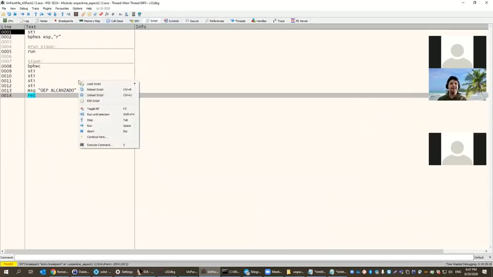
Con la barra espaciadora. Yo aprieto la barra espaciadora y ahí me sacó el mensaje, este OEP alcanzado. Terminó y en teoría yo acá, si aprieto CPU, tendría que estar parado en el OEP. Ahí está, ¿ven? O sea, hizo lo que yo hice a mano, me lo hizo automático. Tiene que pensar que ahí son cuatro o cinco cosas, pero hay veces hay packers que tenés que hacer muchas cosas. Entonces, realmente, automatizar es. Bueno, puedo, puedo probar otra cosa. Mirá, vamos a hacer uno, vamos a hacer uno nuevo. Pará, ¿dónde está? Pará, vamos a hacer uno nuevo. Ya que estamos, vamos a hacerla completa. New Text Document. Vamos a hacerlo con el Breakpoint Memory on Access en la sección código. A ver si me acuerdo cómo era, ¿no? Script 2, le voy a poner. Y le voy a poner, esto creo que era VPRM. Que es el Breakpoint Memory on Access. Creo que es VPRM en la sección, a ver. Acá, 404.000 y de un largo de 2.000. O sea, para que pare un Breakpoint Memory, para que pare cuando ejecuta desde 404.000 de un tamaño de 2.000. A ver. Que abarque todo esa par, que abarque todo eso. Lo que ejecute ahí va a parar en la primera instrucción que ejecute. 404.000. 2.000. Creo que era así, ¿eh? Pero no sé si es en ejecución. Ese es en ejecución. X. X debe ser ejecución. ¿Qué sé yo? Yo estoy probando, estoy zanateando, ¿eh? No sé si esto funciona así, pero si no, lo cambiamos. Y después era erran. Y nada. Ya está. Porque cuando, o sea, este erran, lo que va a hacer va... Sigue, no, sigue, pone sigue y pone return. Cuando llegas a sigue, return, para que termine. Sí, pero hay que darle rana. Y acá, return. Digamos que cuando... Cuando paren el breakpoint este, tendría que terminar el... Te falta la etiqueta sigue. Te falta la etiqueta sigue abajo. Ay, esta gata. Ay, esta gata. Bueno, lo pruebo, qué sé yo. Si no anda, no anda. A golpe se hacen los hombres. A ver, vamos a... Este.
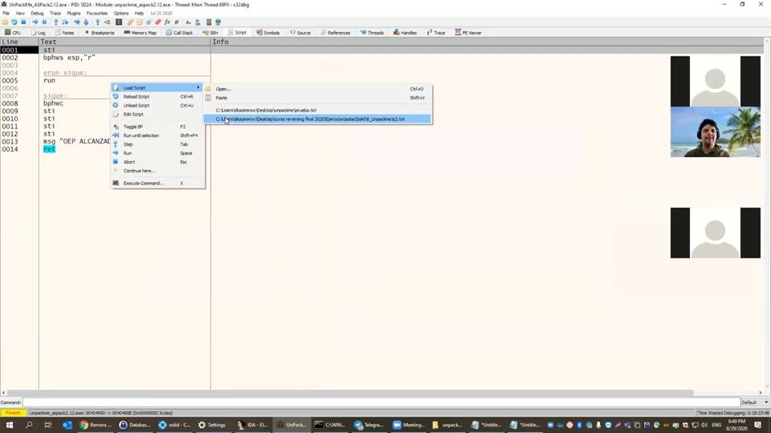
No, este no es... No, este no es... El que bocate es Poudin. Este. Ahí está. No sé si... Se puede trasear también. Tiene para trasear todo. Pará, que ahí estoy en el entry point. Ahí está. Tiene para trasear también. O sea, se puede ir traseando, se puede ir viendo. No solamente ejecutar. Error, ejecuting command, línea 1. Esto está mal. Esto está mal. ¿Cómo será? Y fíjate, está la documentación. Total, está por ahí. Esto era... X64DVG... Es BPM. Parece. No BPRM. Ah, puede ser. Ah, bueno. Viste, esto saben. Se hacen BPM. Pará. BPM. Vamos a editarlo acá, a ver si se puede editar. BPM. Claro, porque el otro es BPRM. Debe ser para memory on write. A ver. No lo cambió. No lo cambió. Ahí está. Ahí está. Ahí terminó. A ver si funcionó. No, mirá. Ah. Re-write execute. No, porque, claro, acá está parando por cualquier cosa. Y tiene que parar solamente cuando ejecuta. BPM. Hay que ver cuál es. Cuál es el de ejecución. A ver. Tiene que estar acá. ¿Dónde está el manual? Perdón. Ahí puse el link en el chat. A ver. Qué grande. Esperá que me fijo. Chat. Salida. Bueno. Chat. Ahí está. A ver. Dirección. Restore.
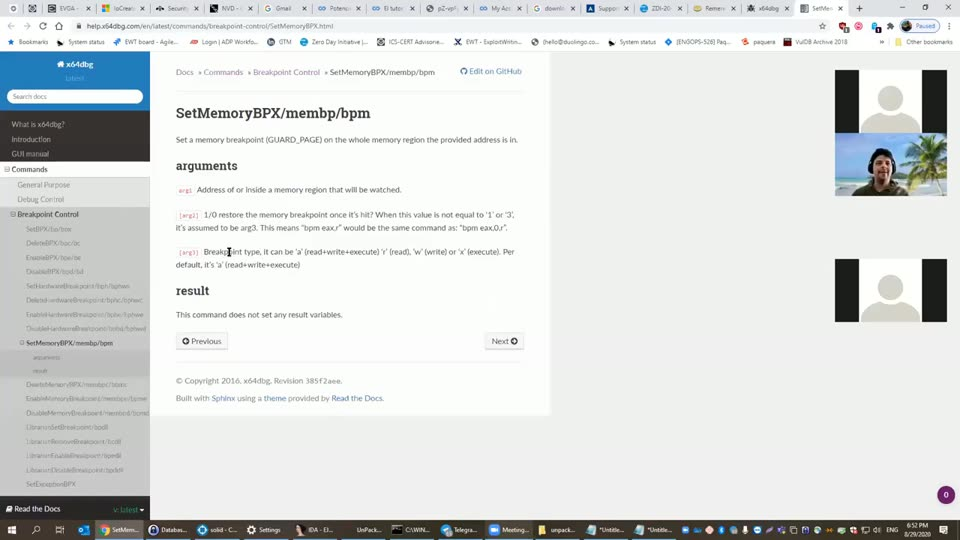
Parece que no va el tamaño. La dirección sola. Ah, pero no le puedes especificar. Adres. Ah, no dice. Ah, R. Acá es. BPM. Acá. R es read, write, write, ejecu. A es read, write, ejecu. R es read, write, write. X. X. X. El default es read, write, ejecu. X es. Pero no lo veo acá, X. Pero el argumento 2 dice 1, 0. O sea, o sea que BPM, EAX, R. O sea, ahí dice que... La estructura debe ser. Claro, pero el segundo no te dice el size, en el segundo no está el size. Entonces... Debe ser la dirección, directamente la dirección. ¿Para qué no va el size? A ver. Claro, es 1 tendría que ser, me parece. Vamos a editarlo, vamos a poner... Esto lo saco. Sí. 1, X. No, 1, 1, X. Porque hay un argumento 2. Restore de memory break, pues una vez y hit. Cuando este valor es igual a 1 o 3... Pone 1. Ahí decís. No sé, ahí hay un argumento 2, que dice 1 o 3, dice. Ah, pero pará, porque no sé si... Pará. Ahí estamos en el puyar. Vamos de nuevo. Si no, lo averiguamos para la próxima vez, está teniendo el problema. No, ahí salió andando, no paró. No, entonces no funcionó. Bueno, lo averiguamos para la próxima vez. No, me pone un break con acá, me puso un break con acá, ¿por qué? Claro, porque se ve que la dirección... Pará. No, ahora me calenté, pará. Para este 1 lo sacamos. No parás, ni... Bueno, hay que ver cómo es eso. Sí, parece que dice... El breakpoint on execution. Acá dice BPM, 0, W. Codo coma X. Bueno, será X, será la dirección. Acá está, acá está, acá está. X, está bien. Sí, bueno, pero ahí dice BPM. Fíjate en la línea de arriba. Dice BPM X, 0, R, viste, al final. Fíjate que acá dice BPM A, X, R. Acá, en la línea anterior. Ahí, arriba, arriba. Ahí. BPM A, X, R, será BPM A, X, X.
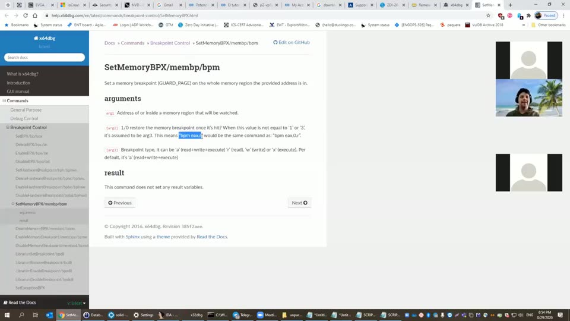
Coma, pero con coma. Ah, pero ahí es. Pero eso es para restaurar. O con 0, será, con 0 en vez de con 1. BPM, la dirección 0, X. No, pero eso me parece que es para que vuelva a parar o que pare una vez y nada más. Me parece que... Bueno, después lo averiguamos, si no para la próxima vez lo averiguamos. Bueno, write, execute. Podrían poner un ejemplo de esto, ¿no? Acá. A ver, vamos a ver. Por ahí no va la comilla. ¿Qué sé yo? A ver. Me pone breakpoint ahí. ¿Por qué? Fuera. No, arranca. A ver si lo puso el breakpoint acá. No, no puso nada. Bueno, hago un intento más. Y BPX, acá dice BPX. Hay otro que BPX. No, pero BPX no es de memoria, es un breakpoint común, me parece. Un reloj. Vamos a ver. Una cosa. Sí, la verdad que un ejemplo podría haber puesto, ¿no? A ver, vamos a apretar la barra espaciadora. Y no, sale andando. Bueno, después lo averiguamos para la próxima vez. No, bueno, listo. Me frustré, ya. Bueno. Lo averiguamos para la próxima vez. Bueno, después cuando termine esto me voy a fijar y le voy a pasar por, ¿cómo se llama? Por Telegram, ¿cómo es? Ya podés seguir. Entonces, si alguien tiene alguna pregunta de este unpacking, siga preguntando y si no ya que arranque Ricardo. Bueno. ¿Tienen alguna duda? Pues eso lo vemos. Igual ya vieron cómo es el otro que tenía, que vio el método de Puyas. Algunas cosas hay que verlas. Esto, más que nada, queríamos mostrarles que tenía la posibilidad de hacer script. Después hay que buscar bien cuál es la, cómo es el comando exacto. Pero bueno, ya sé. Eso después es cuestión de buscarlo. Bueno, ¿hay alguna duda de esto? Pregunten si tienen dudas.
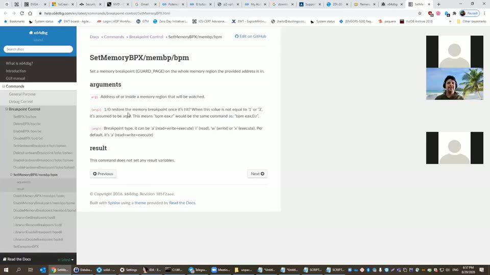
Bueno, ahí les pasé el link. Les pasé por ahí en el chat el link del ejercicio. ¿Te lo di para que estaré vos, Ricardo? Bueno, pasame. ¿Cómo llareo? Dale. Esperá. Host Disable Participant Screen Sharing. Dice que está deshabilitado el screen sharing. Que lo tenés deshabilitado vos. Dice Host Disable Participant Screen Sharing. Te busco acá, a ver si. Make Host. Ahí está. A ver. Share Screen. Ahí está. Bueno. A ver, cuando ven mi escritorio me avisan. ¿Se ve mi escritorio? Sí, señor. Bueno. Ese es el ejercicio. Bueno, el ejercicio, acá tiene el nombre Console Application 10, pero es el mismo que acabamos de bajar. Por si acaso, lo vamos a bajar para que nos digan que no es el mismo. Es el mismo. Acá está el... ¿Cómo es? A ver. Present. Lo tenemos acá. Vamos a bajar. El ejercicio es juntada. Get Shareable Link. Ping. Copy Link. Entonces lo vamos a bajar. El ejercicio. Todo bien como si lo estábamos haciendo. Acá tenemos para bajarlo. Lo bajamos. Y ahí está. Ejercicio juntada. Showing Folder. ¿Alguien lo vio el ejercicio? ¿Alguien lo abrió? ¿Lo miró? ¿Hizo algo? Yo lo miré. No, no, pero de la gente. ¿Alguien le pegó una mirada? No, no. Nadie le pegó ni una mirada. Para ver de qué se trata. Bueno. Es un ejercicio. Tiene Paz Guará. Bueno, una vez que lo desempaca, una vez que lo abrimos, por acá va a estar la carpeta. ¿Dónde está el ejercicio? A ver, la carpetita. A ver, va a estar por acá la carpeta. El ejercicio, acá está. El ejercicio juntada. Ahí está. Bueno, ven que es un ejercicio cuando lo ejecutás, parece que no hace nada, pum, se cierra. Si alguien lo vio, o no lo vio, bueno, lo vamos a ir haciendo de a poco. ¿Ustedes qué piensan? O sea, tírenme ideas. Vamos a tratar de hacerlo.
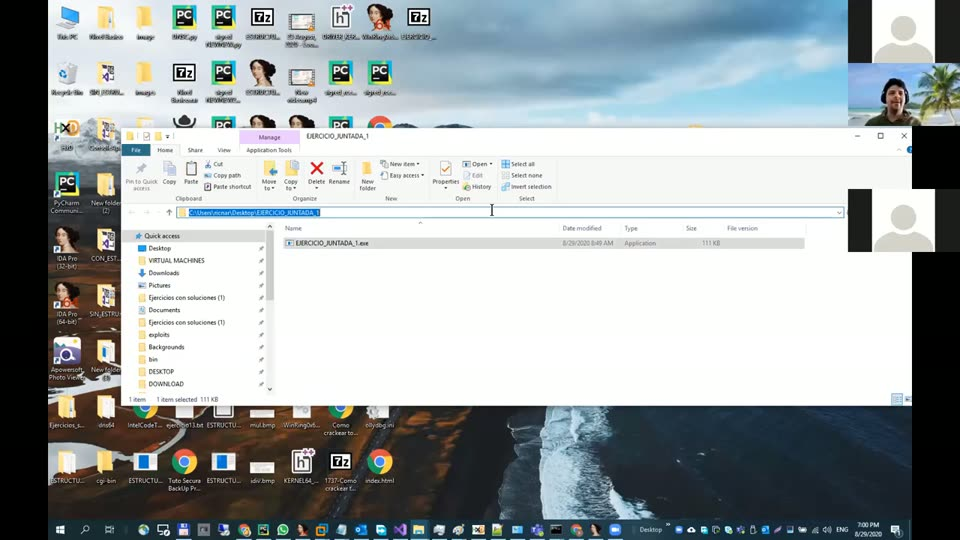
¿Qué harían ustedes primero? A ver. Ideas. Escucho ideas. Vamos a tratar de escuchar ideas y de colaborar entre todos a ver quién se le ocurre una buena idea. ¿Qué empezamos haciendo? A ver, yo lo ejecuto, ven, no hace nada, pum, se cierra. A ver, díganme, a ver alguno que agarre el micrófono y a ver, ¿qué hago? Díganme, yo hago lo que ustedes dicen. Tratar de ver qué archivos, o qué está llamando al principio. Es lo que hace, o sea, ¿pero qué hago? ¿Lo abro en Ida, por ejemplo? Primero lo voy a ejecutar de una consola. Primero lo voy a ejecutar de una consola para ver si realmente hay algo más que se ve ahí. Esto lo ejecuto de una consola. Ven que acá dice, ya hay algo más que solamente se cierra. Te dice, no se puede abrir fichero dat. No such file or directory. O sea, que acá veo que está buscando algo. Está buscando un archivo fichero dat. Ya solamente el cartelito me lo dice. O sea, que acá debería haber supuestamente en la misma carpeta un archivo fichero dat. Lo voy a abrir, lo voy a abrir en... Ay, ¿qué pasó? Se escuchó ahí. Bueno, lo voy a abrir un poquito en Ida, para que vean, a ver, para que veamos a ver qué. Vamos a abrir acá en Ida. Me estoy escuchando a mí mismo. Bueno, lo abro en Ida. Vemos que ahí lo abre. Me va a pedir los símbolos. Bueno, lo abrí con símbolos. Sí, en realidad no tendría que haberlo. Lo tendría que... Porque ustedes no lo tienen con símbolos. Así que voy a cerrarlo. Vamos a borrar los símbolos para que salga igual que ustedes. Porque como yo lo programé, acá está el programa del archivo. Acá en la carpeta deben estar los símbolos. Entonces el tipo cuando se carga, se carga con símbolos. Vamos a hacerlo sin símbolos, de la misma forma que ustedes. Entonces vamos a abrir la carpeta donde está el original con los símbolos y la vamos a borrar. Vemos que acá está. Estos son los símbolos. Console Application 10 PDB. Entonces los voy a renombrar para que no los tome. Entonces ahí que se yo le pongo cualquier cosa. Bueno, eso no sé. Ahí está. Entonces ahora cuando lo abra de vuelta, saquemos esto, borramos. Lo voy a volver a abrir. La idea es que se abra como lo pueden ver ustedes. Si ustedes no tienen los símbolos, bueno, yo tampoco. Vamos a hacerlo igual.
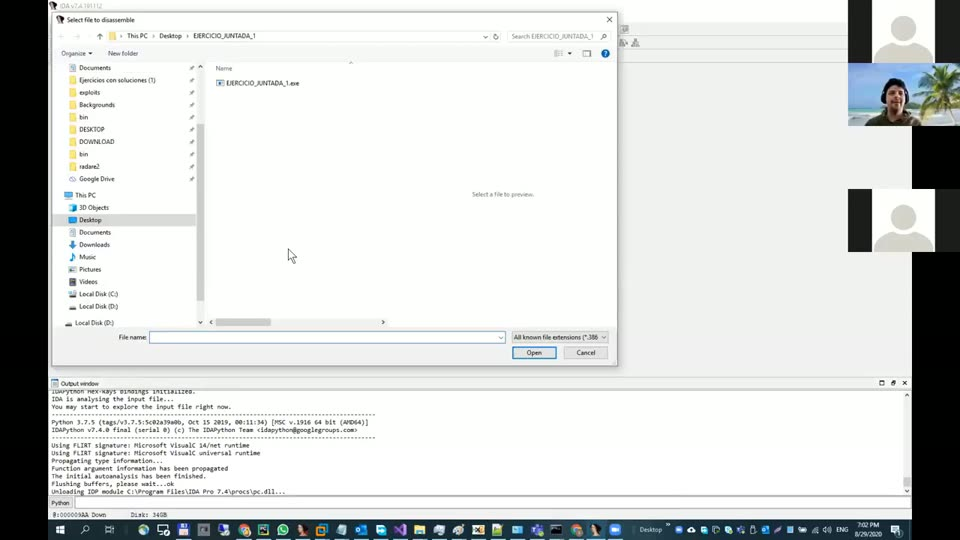
Ahí está. Ejercicio juntada. Y ahora me tiene que pedir los símbolos. Ven que acá me pide el archivo PDB porque yo lo renombré y como no lo tengo, bueno, puedo cancel. Estamos iguales. Bueno, vemos ahí que lo está analizando. Y ahí cuando se pone verde, termino de analizar. Mutense un poquitito así, porque si no me escucho a mí mismo. A ver, Soli, si tenés algo. Bueno. Después cuando paro en un momentito... ¿Dónde tienes el mando, Ricardo? Ah, ¿yo tengo el mando? Bueno. No me escucho, ahí no me escucho. Bueno, después cualquier cosa, si en algún momento yo paro y les pido alguna opinión, el que quiera hablar se desmutea y me... No es que no puedan hablar. Se desmuteense para hablar. Bueno, vemos que acá es el mine, la función principal. Y vemos que lo primero que hace es llamar a esta función fopen, que está acá. Con un argumento que casualmente es fichero dat. Parece ser que quisiera abrir ese archivo con permiso de lectura y binario. Vamos a ver qué es ese fichero dat. Vamos a ver qué es ese fopen. MSDN. Fopen. Lo busco en internet. Y dice, abre un archivo. Vean que es muy simple. Abre un archivo. O sea que... Intenta abrir el archivo ese, fichero dat. Vean que los argumentos son el nombre del archivo, filename, y el modo. El argumento filename es el nombre del archivo y el modo. O sea que si es para lectura, binario, el modo siempre te dice que la forma que lo abrís. Vean que acá está, por ejemplo, ejemplos. Y acá todo esto, ¿no? Y entonces lo importante que nosotros tenemos es, dice que si me devuelve un valor cero, un puntero nul, o sea un cero, significa que hay un error. O sea que no encontró el archivo o algo pasó. Y entonces eso es lo que debe estar pasando acá. Llama fopen y entonces el retorno de la función está en a x, que lo guarda acá en esta variable val. La compara y se fija. Si es cero, si es cero, va por acá. Porque si no es cero, si no son iguales, va por allá. Si son iguales, o sea, si esto es igual a esto, significa que son iguales. O sea que viene por acá. Entonces en ese caso iría donde dice no se puede abrir el archivo fichero dat, que es el error que nos está pasando a nosotros. Viene acá, esto lo vamos a poner en colorado. Bueno, no se ve nada, ese colorado es más feo que... Vamos a ponerle otro más suavecito.
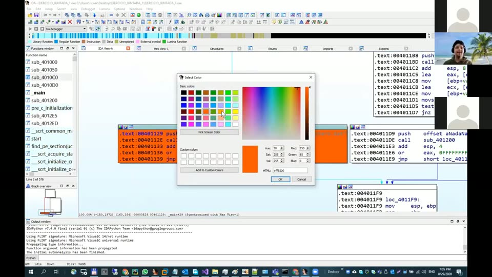
Porque ese es muy colorado. Igual se ve. Bueno, está ahí. No se puede abrir el archivo fichero dat. Esta sería la parte donde no hay que ir. ¿Se entiende por qué va acá? Porque al devolver cero, compara el valor de val con cero y se fija. Si son iguales, o sea, si va a ser verdadera la comparación, va a ir por acá, por el verde. Si no son iguales, o sea, perdón, si son iguales va a venir por acá. Y si no son iguales, porque en realidad lo que está fijándose es el resultado. O sea, si no son iguales. Si no son iguales va a venir por el verde, o sea, que es la verdadera la comparación. Y si son iguales va a venir por el rojo. Entonces tengo que crear un archivo fichero dat, porque si no, me va a tirar para afuera. Entonces la idea es que hay que hacer un archivo fichero dat, si no estamos fritos. Entonces vamos acá a crear un archivo, nuevo, archivo, fichero dat. Vamos a ponerle el nombre, fichero dat. Hay que fijarse siempre de tener configurado que se vean las extensiones. Porque si no, si tenemos el Windows configurado que no se vean las extensiones, cuando escribamos el archivo fichero dat, en realidad va a ser un archivo fichero dat.txt. Y entonces cuando lo busque el programa, no lo va a encontrar, porque va a tener una doble extensión que no vamos a ver. Siempre, eso tiene que ver en Folder Options, siempre que es muy importante cuando uno en Windows lo usa por primera vez. ¿Esto qué pasa? No Under Folder Options. Folder, bueno. Supuestamente en Folder Options, ¿qué puse? Folder, por eso. Ahí está, Folder. Bueno, no encuentra nada, como siempre. Acá está Folder Options. Vue, y quitarle la tilde a este Hide Extension for None Field Types. Que no las oculte. Esto es muy peligroso. Tener puesta tilde, no es solamente que esto no pueda funcionar. Es peligrosísimo tener puesta esta tilde. Porque vos podés, o sea, si yo la pongo acá, por ejemplo, esta tilde, vean. La pongo ahí, ¿no? Entonces, ahora me va a ocultar las extensiones. Ven que ahora no se van a ver. Bueno, ahora, ven que dice, ejercicio juntado a uno y no me muestra que es un exe. ¿Y cómo sé que es un exe? Por el ícono. Y el ícono me lo pueden cambiar. Entonces yo puedo mandarme un archivo de una imagen o lo que sea. O un archivo en exe que tenga un ícono de una imagen. Y yo me confío en el ícono para poder ejecutarlo.
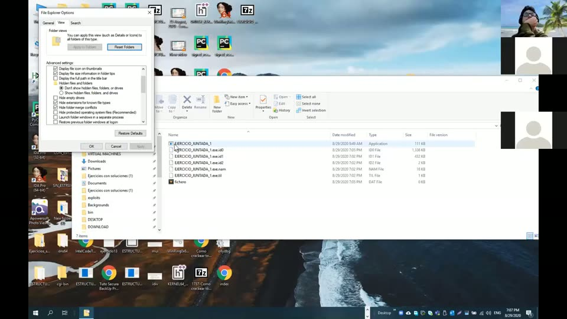
Y en realidad estoy ejecutando un ejecutable. O sea que esto siempre tiene que estar puesto. Esto tendría que venir por default, realmente. Ya hace rato que tendría que venir por default. Que muestre las extensiones. Bueno, una vez que está puesto eso como extensión, entonces acá realmente la extensión es .dat. Y si ahora lo ejecuto, por lo menos no me va a tirar afuera ahí. No digo que me va a decir chico bueno, pero por lo menos no me va a tirar ahí afuera, ¿no? Porque eso ya sería... No digo que con eso solo ya va a estar. Pero por lo menos que no me tire afuera ya tal al inicio, ¿no? Vemos que ahora ya... Vemos que dice value 0, nada, nada, cookie. Ahí hay otra cosa. Ya hay varias cookie 0, cookie 2 0, size, value, nada, nada. Entonces, bueno, por lo menos ya evitamos algo. Evitamos esto. Que no me tire afuera acá y que venga para este lado, ¿no es cierto? O sea, que no venga para acá, la parte está coloradita, y que venga por este otro lado. ¿No es cierto? Vemos que acá están algunas de las strings, que cookie, algunas de las strings que está ahí imprimiendo. O sea, que estas strings son las que están imprimiendo. Y acá está nada, nada. O sea, que uno de los pasos sería, bueno, ya tengo algunas strings, y bueno, buscarlas. Pero acá como están a la vista, por ahí no es necesario buscarlas. Pero bueno, si no estuvieran a la vista, tendría que hacer view, open sus view, strings, y en la lista esta, hacer control F y poner nada, por ejemplo, nada, nada. Y entonces esto me va a buscar la string, ¿y qué pasa? Entonces ahí me va a decir, la string está acá, en la sección de redata está la string. Y donde se la llama, con X, vemos que llegó al mismo lugar, ahí a nada, nada. O sea, este es un lugar que no deberíamos llegar a nada, nada, porque supuestamente es un lugar colorado, porque te tira afuera. Nosotros tendríamos que venir por acá. Acá hay algo que está chequeando que no le gusta y viene acá, ¿no es cierto? Bueno. A ver, ¿alguno más que tiene alguna idea más? ¿Qué se le ocurre? ¿Qué podemos seguir haciendo? A ver, tienen alguna idea. ¿Qué seguimos haciendo? Mirando, a ver acá, ¿qué hacemos? Tiren ideas, a ver qué se le ocurre. ¿Qué harían ustedes? Alguien que tenga una idea, ponga el micrófono y diga. ¿Qué hacemos? Buscaríamos un jump. Un salto. Buscaríamos un salto. Puede ser. Podríamos buscar también, a ver si hay un string de chico bueno y chico malo, que acá no se ven. Acá, por lo que dice nada, nada, pero no sabemos si esto es el string de chico bueno y chico malo.
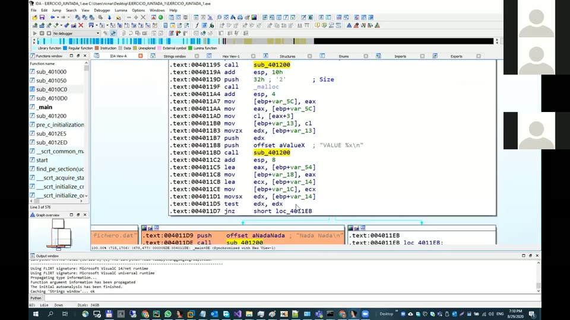
Podríamos buscar un salto, pero el salto tendría que ser en una zona que haya un chico bueno y chico malo para poder decidir. Por ejemplo, voy a ver acá en las strings. Buscar las strings acá. Vemos que acá hay unas strings, hay un buen chico y un mal chico. Ven que acá hay una string. O sea, saqué el filtro que tenía, que había puesto nada, y veo todas las strings, y bueno, acá miro. Una era fichero DAT, no se puede abrir el fichero DAT. Bueno, esto es Q, qué sé yo. Y acá ahí están estas strings. Buen chico y mal chico. Muy bueno, seguramente para... Que es la zona donde debe decidir. ¿Ven? Entonces voy a ir ahí. A ver qué pasa. Hago doble clic. Y apreto X para ver de dónde viene. Y entonces veo que acá hay una parte donde... Está buen chico, que seguramente es la parte verdecita, que es donde tenemos que ir. Y mal chico, la parte donde está mal. Está la parte que está mal acá. Bueno, entonces... ¿Cómo se llama? Ah, avísame el tiempo. Yo no sé si después cuando... ¿Cuánto hora termina esto, Soli? Todavía falta, ¿no? No, me parece que ya pasaron los 40 minutos, pero creo que... Creo que me puso que... Carazo, que la primera vez... Te hace más largo, porque es la primera vez. Bueno. Démosle hasta que se corte, si no pasamos el otro link después por teléfono. Bueno, hasta que se corte, bueno. Pero... Bueno, entonces vemos que acá hay alguna decisión. Compara un valor con una constante. Ese valor, si es igual, va... Si es igual... Si no son iguales, va mal chico. Y si es igual, va acá buen chico. O sea que acá el tema está en todas estas constantes. ¿No es cierto? Y bueno, acá... Vamos a tener que ver bien de dónde viene esa función. Esta función es una función. Pongámosle que acá sea la función... Pongámosle función... Función que chequea. Che-que-a. Pongámosle como nombre. Función que chequea. Y vamos a ver de dónde viene. O sea, de aquí... Perdón, le puse a la variable. Perdón, esto no era así. Vi mal acá. No, en el nombre de la función, le pongo función que chequea. Función... Ahí está. Función que chequea. Bueno, entonces ahora voy a ver quién llama a esta función que chequea. Porque para llegar acá tengo que ver de dónde viene. Entonces aprieto X y veo que hay una llamada acá a la función que chequea.
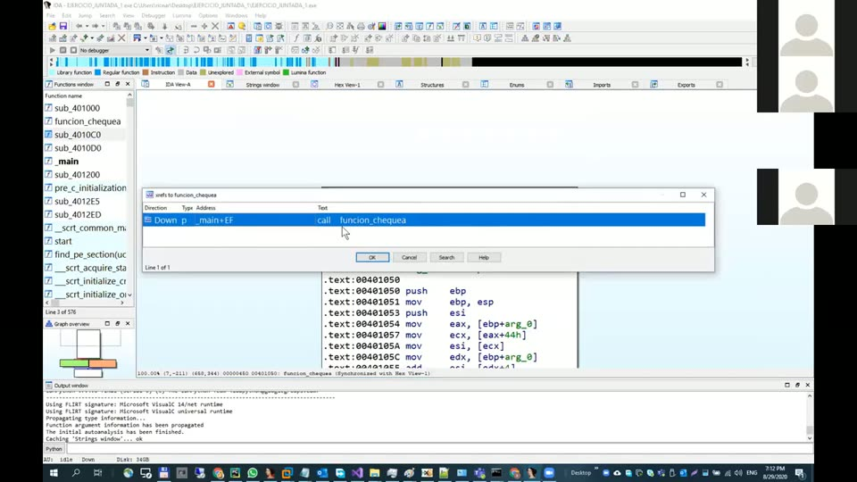
Que viene de acá. O sea que acá, casualmente, si no va nada a nada, viene acá función que chequea. O sea que acá hay que venir por este lado. Primero que nada hay que tratar de ver... De venir por acá, ¿no? Por el lado verde, no por el lado rojo. Y nosotros estamos viviendo por acá, por nada, nada. ¿Y qué es lo que pasa acá? ¿Qué es lo que está pasando? Vemos acá que hay varios calls. Un malloc, otro call, las strings. ¿Qué son estos calls? Veamos. ¿Qué hay acá adentro? Así por experiencia no veo nada muy interesante. Así no estoy viendo nada que me diga qué es. Veo que no muestra nada. Entonces, como no sé, voy a trasearlo y lo voy a devaguear. O sea, vamos a mirar a ver qué es lo que hace cuando realmente pasa por acá. O sea, a ver si sacamos algo. Es muy posible. O sea, una idea es que si él abre un archivo, vemos que esto, cuando abrís el archivo, guarda el putero, el descriptor del archivo. Digamos, abre una especie de handle del archivo. Que sería este val, ¿no es cierto? Y vemos que lo usa acá. Este val lo usa como argumento en todas estas llamadas. Entonces, es muy posible que acá sea un read. Esto sea un read. O sea, que acá lea del archivo. Que lea bytes del archivo. Vamos a poner acá file. Vamos a ponerle file. Como que es el, digamos, el descriptor o el handle del archivo. Cuando abre, vos tenés ahí un descriptor o un handle. Y acá lo llama. Y vemos que acá parecería que, da la idea de que esto sería un eferrid que leería cuatro bytes. ¿No es cierto? Por experiencia nomás, ¿no? Porque si yo leo el handle, podría escribir o leer. Pero como está abierto como lectura, acá, yo pienso, me inclino más que nada que esto sería un eferrid. Por ahora, pongámosle. No sabemos, pero así, digamos, intuitivamente pongámosle eferrid. A ver, ¿qué pasa? Vemos que son igual, la misma llamada, ¿no? 3 eferrid. Y vamos a ponerle un break por acá, ¿no? Y vamos a ejecutarlo a ver si realmente lee o qué hace. ¿Qué intenta? Obviamente el archivo está vacío. Vamos a tratar de ponerle algo para ver si lee, ¿no? Vamos a abrirlo con un editor hexa y pongámosle algún contenido, ¿no? Porque eso es 41, 42, 43, 44, 45, 46, 47, 48, 48, 49.
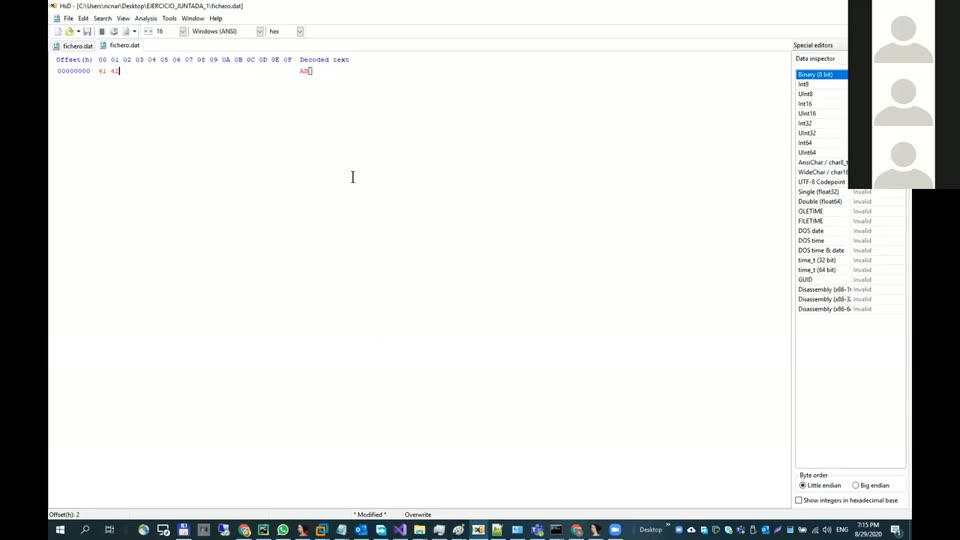
Vamos a ponerle algo para que sí lee, si no, ¿cómo vamos a ver? No va a poder leer nada. Entonces, bueno, tiene esos bytes. Él vemos que los primeros 4 leí, trataba de leer los primeros 4. Después acá posiblemente, no, acá. Acá leía 4, acá leía otros 4 y acá leía 1. Así que posiblemente sea 9, que leía 4, 4 y 1, 9. En las tres llamadas. Pero bueno, vamos a mirar. Lo vamos a devaguear acá mismo en IDA. Total, ya lo tenemos acá. Arrancamos el debugger. Y elegimos el debugger. Bueno, este es el que tiene el IDA Free, tiene un solo debugger. Los que tiene el IDA Pro, tiene varios debugger. Elegimos Local, Window, Debugger. Y le damos Start. Vemos que, aquí dice que ojo, cuidado, porque obviamente vas a ejecutar algo. Y vemos que ahí arranca. Entonces ahí paró. Bueno, vemos que llegó ahí. O sea, como el archivo lo encontró, esta parte donde decidió el fopen realmente guardó en file un valor. Vemos que acá está, hay un valor, no es cero. Es ese valor que está ahí. Vemos que ahí está, 77, 84, eso es cero. O sea que, al no ser cero, fue porque encontró el archivo fichero DAT. Si yo le pongo un breakpoint acá, en esta comparación, y renombro el archivo fichero DAT, por ejemplo, van a ver qué pasa, lo que hagamos dicho. Si yo a este archivo le cambio el nombre, le pongo, qué sé yo, cualquier cosa, va a ver que me va a tirar afuera. Es que pasa lo que habíamos dicho. Bueno, ahora está abierto por él. Tenemos que parar esto. Si no, no me deja cambiarlo. Bueno, ahí está. Entonces ahora lo vuelvo a arrancar y pongo un breakpoint ahí. Y entonces ahora, seguramente, como dijimos, me va a tirar afuera mal. Porque file, vemos que a X devuelve cero al pasar por open. Y entonces, ahí, al ser cero, lo va a comparar con cero. Y entonces, si no son iguales, viene por acá. Si no son iguales, no son cero, no son iguales. Viene por acá, por el verde. Y si son iguales, viene por el rojo. Y viene ahí. Error. Entonces, bueno, nosotros estábamos bien. Ese tenía que ser llamado fichero dat. Este archivo tenía que ser llamado fichero dat. O sea, al renombrarlo, hicimos macana. Volvemos como estaba antes. Ahí está. Entonces, ahora sí. Vamos a arrancarlo de vuelta.
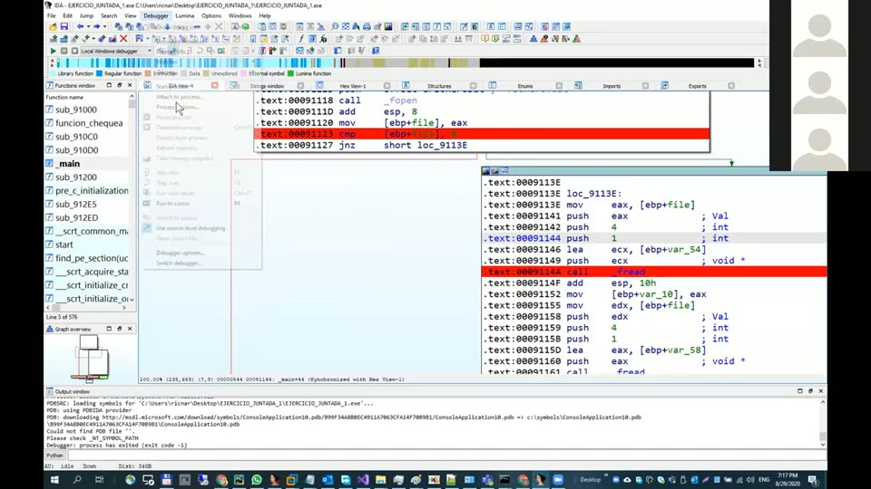
O esto lo podríamos reversar todo estáticamente. Pero no quiero yo hacer eso, porque sé que hay gente que recién empieza. Entonces, vamos a tratar de variarlo un poco. Bueno, ahora vemos que sí, que a X vale distinto de cero, porque fopen encontró el archivo fichero dat. Y entonces, ahora sí, viene por este lado. Bueno, entonces, ahora le pasa el argumento a esto. Y acá, aparentemente, hay una dirección que debe ser... Si este es el puntero del archivo, y esto son la cantidad que lee, posiblemente guarde ahí lo que lee. Vamos a trasear con f8. Vemos que va pasando. Y cuando pasamos por eferril, vemos que ahora, ahí guardó 41, 42, 43, 44. ¿Ven ahí en la ventanita? Bueno, si no lo ven acá. Vemos que ahí guarda 41, 42, 43, 44. Que era lo que yo había guardado en el archivo. O sea, que realmente está leyendo el archivo. Está leyendo estos bytes, 41, 42, 43, 44. O sea, que eso era realmente un eferril. Si voy a ver los argumentos de eferril, vamos a ver qué coincide. Eferril, mcdn. Vamos a ver que los argumentos de eferril son cuatro, casualmente, los que estaban ahí. Uno es el file, que es el que devuelve fopen, como ya vimos que pointer to the file structure es lo que devuelve fopen cuando lo abre. Después tiene los sizes. Uno es el count, que es la cantidad de ítems, y otro es el tipo de ítems. O sea, que bueno, en este caso, le es cuatro del tipo de ítem de un byte. O sea, le es cuatro bytes. Y buffer sería el buffer donde guarda lo que le yo, que eso es lo que está acá. Entonces, volviendo acá, vemos que este era el buffer, este CX ahí apunta al buffer, que es donde guardo el 41, 42, 43, 44. Este es el tipo de dato, que sería uno, sería byte. O sea, que lee cuatro de este tipo, de un byte. O sea, que en total lee cuatro bytes. Y el file es el último argumento que viene de acá, de open. O sea, que realmente es EFREIT. Eso no hay ninguna duda. O sea, no lo deten... Una pregunta. Sí. Ricardo, una pregunta. Antes, tú lo renombraste a EFREIT, pero había antes una dirección. La dirección que tenía. Claro. ¿Y eso es porque LIDA no reconoció que era el EFREIT?
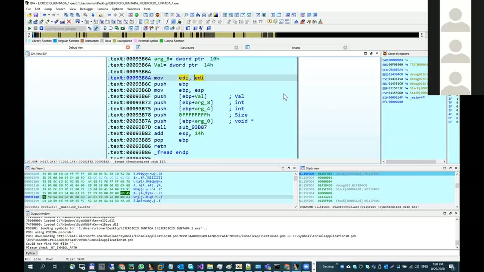
¿O es porque está llevando una función? No reconoció que era el EFREIT, simplemente porque yo lo compilé. Con todas las DLL embebidas en el ejecutable. O sea, que este EFREIT, si hubiera estado en una DLL, al ver que es una DLL, apuntando la DLL, era obvio que lo iba a detectar más fácil, porque él ve que es la DLL tal y se fija. Bueno, pero al estar el código ahí, a veces lo detecta. ¿Ven? Por ejemplo, el Fopen lo detectó. Este lo detectó. Este, no. Pero bueno, eso depende. O sea, depende un poco, ¿no? Generalmente, todos los debuggers tienen problemas, a veces cuando embebes dentro del ejecutable, las DLL. Obviamente, eso no es una cosa que se use normalmente. ¿Quién va a embeber las DLL que son del sistema dentro del ejecutable? Yo lo hago para que sea más compatible para que digamos, para que se distribuya más fácil y que corran todas las máquinas. Y no me digan, me falta el runtime. Pero en general nadie hace eso. Todos los ejecutables tienen las DLL sueltas. O sea, del sistema no las meten dentro de su propio ejecutable. Yo lo cambié cuando hice acá en el Visual Studios este programa. Fui a las opciones, en propiedades, y ahí está la opción para embeber. Que acá está, dice multitread, runtime library, multitread, es que lo embeba. La original es multitread DLL. Esta. Que es que sigan, que las DLL estén separadas y no estén bien bebidas. Yo lo cambié, esa opción. Bueno. Gracias. Entonces, eso por eso a veces no les tengo. Si esto estuviera en una DLL, el tipo ve que DLL es y enseguida se da cuenta cuál es la función. No es tan difícil. En ese caso... Me imagino que también puede haber sido, o sea, puede haberse dado el caso de que simplemente hacía la llamada a una función del código y dentro de ahí ya se decía el FRID. Sí, puede ser. No, pero esto es FRID. Si yo lo abría con símbolos. Claro, claro. Con símbolos, ahí sale FRID. Te lo digo así nomás. O sea, y fíjate que en el programa, si ves, ves que son llamadas FRID, ves. FRID, FRID, FRID. Ves que son cuatro UI, cuatro UI y un RAID. Son tres llamadas FRID. O sea, este es el código del programa. Supuestamente uno no lo tiene, pero bueno, lo que vemos que está haciendo es lo mismo que estamos pasando ahora. Llama a fopen con el archivo fichero dat, con el argumento RB. Si no lo encuentra, si es nulo, dice no se puede abrir el fichero dat.
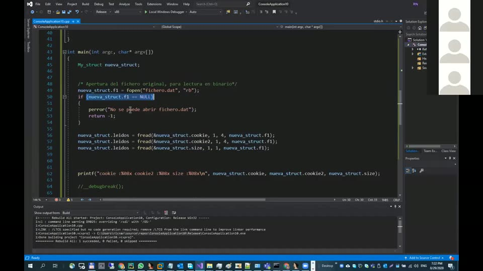
Y después va a leer los bytes de esos y los guarda en estas variables. Cookie, cookie2, cookie6. O sea, que la primera variable se llama cookie, la segunda cookie2 y size. Que es lo que imprime. Después imprime el valor de cookie, cookie2 y size. Pero de cualquier manera, aunque yo no tenga eso, me doy cuenta que esta variable, por ejemplo, var58, que es donde guardo el 41, 42, 43, 44. Bueno, perdón, esta var54. Vemos que la usa más, en el print, vemos que la usa como argumento acá. Es el primer argumento. Entonces, como es el primer argumento, corresponde, este es un printf, obviamente, porque ya veo que, me doy cuenta que pasa lo mismo que en el otro. Al tener el argumento con, con un string que tiene porcentaje x, porcentaje x, porcentaje n, el printf tiene, es obvio que es un printf, o sea, que acá debe ser un printf, obviamente. Entonces, acá, esta, por ejemplo, será un printf, que es el que imprime la string esa. También me doy cuenta un poco por experiencia, pero si no, si esto estuviera, si no estuviera las DLL embebidas, seguro aparecería. Y entonces veo que la primera variable, que es esta var54, es cookie, porque es el valor de este, es el que aparece acá como, me lo va a imprimir como hexadecimal. El segundo va a ser cookie2, que va a ser este. Y el tercero va a ser size. O sea, estas tres son lo que lee, son las que lee. Cookie, cookie2 y size. Y yo lo renombro, veo que a este le pongo cookie, cookie, o sea, no me llevo por el código fuente, me llevo por el cartel que dice acá. O sea, que acá, en el mismo printf me dice que una se llama cookie, una cookie2 y otra size. Y son estas tres, cookie, cookie2 y size. Size. La más lejos es la que está más arriba, size. Entonces, vemos que acá, cookie va a imprimir el valor de este, lo va a imprimir acá, cookie2 lo va a imprimir segundo, y size lo va a imprimir tercero. Y son casualmente las que lee, ¿no? En el primer read lee los cuatro bytes, que es cookie, acá. En el segundo read lee los segundos cuatro bytes, que es cookie2. Y después lee un byte solo, que es size. O sea, que si yo voy pasando, veo que ahora va a leer los otros segundos cuatro bytes que yo puse en el archivo. Vemos que ahí está el 45, 46, 47, 48. Es el segundo, lo segundo que había puesto yo en el, perdón. Ricardo, acá, Juan Padilla pregunta, ¿cómo hace para que se muestre el diálogo de fichero.dat?
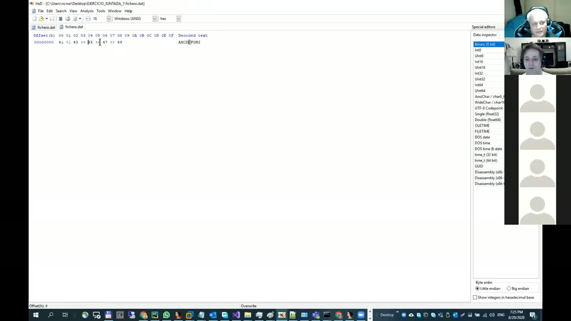
Dice, porque a él le sale un esquema más reducido. No sé, ¿a cómo lo muestra herida te refería? ¿Acá? Explica, dale micrófono. ¿Lo puedes hablar con el micrófono? Sí, desmuteate y pregunta, Juan. Sí. Es que a mí me sale solamente una porción de direcciones de memoria. Entonces a mí me sale tres, cuatro, un álbum muy pequeño comparado con lo que le sale a usted ahí en la imagen. ¿Esto no te sale? ¿En el Ida? No, él debe decir que en lugar de que le diga offset a fichero, dale, debe salir la dirección acá, me parece. No, no, no, me refiero a que. Yo sé qué le pasa, ¿puedo explicarle? Bueno, pues si no, manda un snapshot. Le das clic derecho sobre la gráfica y le dices view text. Eso es la diferencia. ¿Esto? ¿Así te sale? ¿Así? O sea, como texto, ¿así? No, le sale al contrario, le sale la gráfica y no ves la gráfica como un mapa conceptual. Entonces, así le sale. Entonces debe darles clic derecho, view text, para que aparezca como más legible. No, no, no entiendo. No, no, me sigue saliendo solamente tres, cuatro, tres, ¿por qué no mandas un snapshot? ¿Me puedes mandar un snapshot o algo? ¿Por qué no me doy cuenta? Creo que es por la versión de Lida. Por ahí es una versión vieja de Lida. ¿Qué versión tenés de Lida? La seis y ocho. Ah, la seis y ocho. Está en la siete y pico. Posiblemente. Pero igual mandá, mandá un snapshot a ver qué es lo que, qué es lo que, no, no, no ves, qué es lo que no sale. Tendría que ser muy parecido, no puede ser muy diferente, a pesar de que está en la siete. Me sale proporciones, por ejemplo, si le doy al lado izquierdo, donde pone funciones, no me, si le doy a start, pues me sale un árbol, luego le doy a otra función, me sale otra función, no me salen todas las funciones agrupadas. En view functions no te sale, open sub view functions,
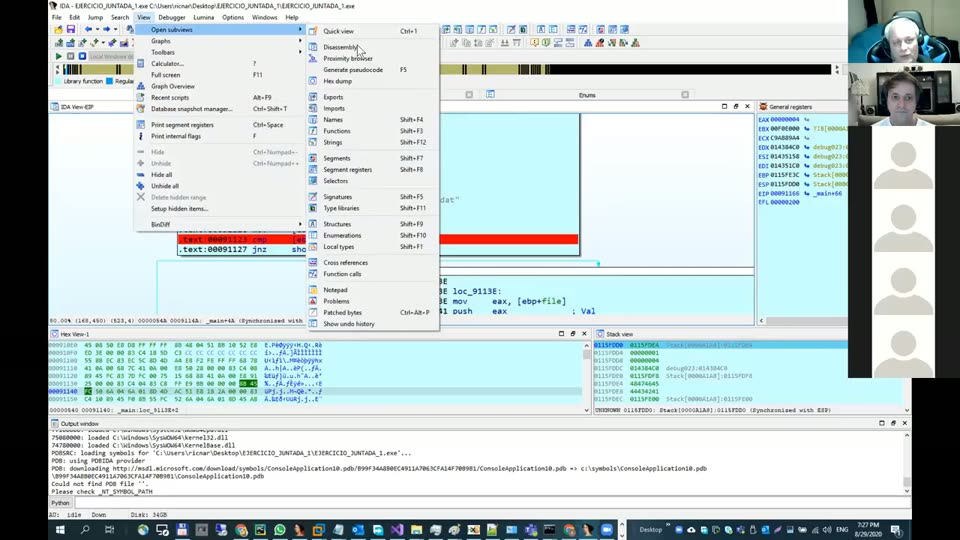
tenés que abrir, ahí están las funciones. Elida no te va a salir nunca igual, porque todos lo tienen, lo configuran a su forma. O sea, estas funciones, si no la tenés acá, uno lo puede abrir, open sub view functions. Entonces te sale acá la lista de funciones. O sea, nunca van a estar todas las pestañas en la misma forma, porque eso depende de lo que uno tiene abierto. Elida no es igual, como el Oli. Capaz que si tiene el Elida Free, no lo analiza bien. No, pero es Elida 6.8, no es Elida Free. O sea, posiblemente tengas otras pestañas abiertas acá. O sea, sería bueno que mandes un snapshot y entonces ahí vemos cómo está, porque vos podés abrir acá, si yo cierro esto y cierro esta, y no tengo nada. Tengo que ir a view, open sub view, disassemble. Entonces acá tengo el disassemble. O sea, según las pestañas que abra, voy a hacer lo que voy a ver. ¿Te das cuenta? Y si, por ejemplo, tengo acá reset desktop, lo reseteo y acá me aparecen otras cosas, me aparecen los registros, ves, cada cual lo acomoda a su forma, ves, acá están los registros. Y acá, esta es la forma más estándar, ¿no es cierto? Así que si mandás un snapshot, mandalo cualquier cosa, sino al grupo, al grupo de Crow One. ¿Vos estás en el grupo de Crow One? Sí, mandalo ahí al grupo de Crow One. A ver si tengo el telegramma acá. Mandalo ahí y cuando lo mandes lo vemos. Pero seguramente es una cosa de configuración de LIDA, tiene muchas formas de abrir las cosas y de mostrarse. Está lleno. Bueno, cualquier cosita, después lo mandás ahí, cuando lo mandes avisá y lo vemos. Pero eso debe ser algo de configuración. LIDA tiene muchas formas de mostrar las cosas y cada uno lo configura como le gusta, más o menos. Y según lo que esté, te van a aparecer cosas o no te va a aparecer nada. Yo puedo suprimir cualquier ventana de esta y la puedo poner donde quiero, la puedo mover, la puedo poner acá arriba, ¿ves? La puedo sacar de acá, qué sé yo. Y todo depende de donde yo agarre y las acomode las cosas como yo lo tenga a mi gusto. Entonces, si está configurado como a mí me gusta, pero por ahí a estar personal, le aparece de otra forma o movió las cosas y le salen en otro lado. Pero bueno, después mandá el snapshot y vemos. Pero bueno, lo importante es que el programa continúa, digamos, leyendo, ¿no? Leyó los primeros 4 bytes acá en cookie, ya habíamos visto, seguimos y ahora, bueno, este,
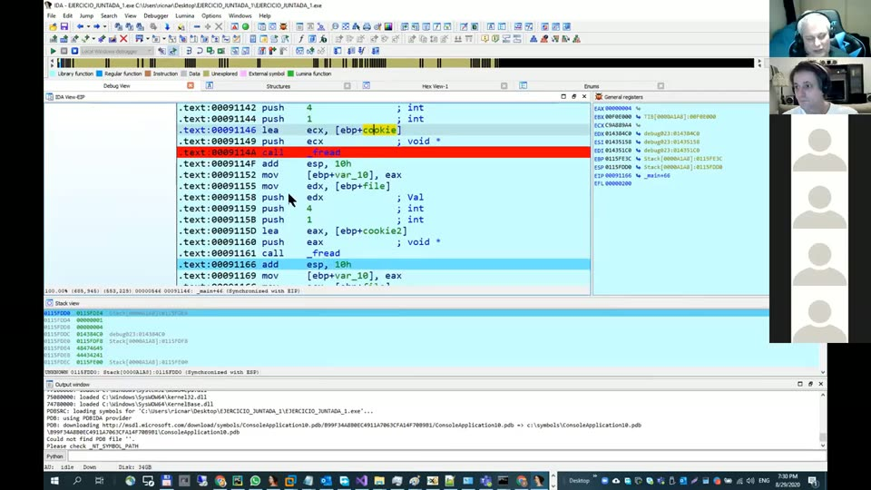
ahora estamos acá, leyó los segundos 4 bytes, 45, 46, 47, 48, como dijimos, está leyendo estos 4 ahora, los segundos 4. Y después va a leer el noveno, este 49, que es el size, que es el último. Vemos que ahora va a leer ahí size. Entonces este size, acá todavía no lo leyó, ahora cuando pase por encima de Ferrid con F8, vemos que leyó el size, que en este caso es 49, porque yo le puse eso, 49, 49. bueno, entonces ahora, ¿qué pasa? Sigue el programa, vamos a ver, vamos a ir traseando y vamos viendo qué hace. Vemos que acá, y lo que hace ahora es imprimir, cookie, cookie2 y size, esos tres valores, vamos a ver que ese era printf, porque cuando pase por encima, va a estar, va a imprimir, ¿ve? cookie 44, 43, 42, 41, cookie2, 48, 47, 46, 45, y size 49. Vemos que imprimió. Después agarra, y hace acá una cosa media rara, y hay un print acá, a un valor que se llama value, que acá hay gente que me lo hizo, y cuando lo miró dijo, bueno, acá hay algo raro, sí, acá hay algo raro, casualmente, después viene esto nada, nada. Bueno, malloc es una función que reserva un pedazo de memoria en el heap, o sea, en la memoria, para poder reservar, o sea, que yo le pido al sistema que me reserve 32 bytes, entonces él me va a reservar 32 bytes, paso con F8, voy a buscar malloc en MSDN, es una función para reservar memoria, malloc MSDN, vemos que acá está, vemos que dice, malloc returna un puntero al espacio alocado, dice, allocate memory block, o sea, que reserva un bloque de ese tamaño, de 32 bytes, que yo le pido, y me lo devuelve el puntero a esa zona que me aloca, ahora cuando yo pasé por arriba, o sea, de 32 bytes, o sea, que ahí yo pasé y me devuelve el puntero NAX a esa zona de memoria que está ahí, vemos que está llena de basura, bueno, esa zona es lo que él alocó, y ahora, ¿qué pasa? ¿qué hace acá? Bueno, guarda el puntero ese, AX es el puntero, acá lo guarda, este cuando vuelve malloc, devuelve NAX el puntero a la zona de memoria, le vamos a poner, puntero, le vamos a poner, puntero, a la zona
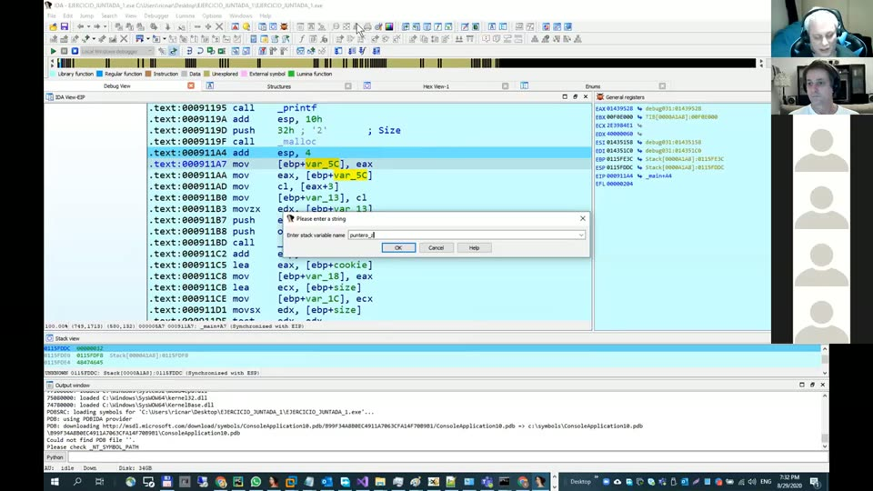
a la zona de memoria, 32 bytes, vamos a ponerle total, vemos que lo guarda ahí, y después lo vuelve a levantar ese puntero, que lo guarda, lo guarda ahí, es esta dirección, cero, catorce, treinta y nueve, quinientos, veintiocho, y vemos que lo vuelve a levantar, lo guarda y lo vuelve a levantar, otra vez está en AX, lo guarda ahí, y después lo vuelve a levantar, y después lee el tercer byte, ahora, el tercer byte de qué, de una zona que, es una zona llena de basura, que normalmente no está inicializada, a ver cómo dice acá, qué dices, justo está, me mandó la imagen, bueno, es más abajo, tenés que, bueno, porque ahí, lo que pasa es que ahí no estás en la, estás en el principio de la función, ves, estás en Start, vos tenés que ir ahora, fíjate, ¿ves dónde dice Función Name? A la izquierda, ahí en esa, en esa pestaña, Función Name, hace, bueno, vos estás en otro lado, vos tenés que ir al Mind, fíjate, te muestro ya que estás, esperá que vuelvo ahí, te muestro como, dónde estás, y ya vuelvo para ahí, bueno, vos fíjate, vos estás, en esa pestaña que vos tenés, que se llama Función Name, que está a la izquierda, equivale a esta mía, que yo tengo acá, Función, es lo mismo, entonces ahí, tenés que buscar el Mind, ponés Control F, y buscas Mind, entonces, ves que te aparece Mind, te aparece Mind, cuando buscas, escribí Mind, y ahí haces doble clic, y te va a llevar a la parte donde estoy yo, ¿encontraste? Ahí, en la pestaña de Funciones, está el Mind, entonces ahí, te va a llevar, si no lo encuentra, bueno, ahí hay que ver, por ahí, como es una versión vieja, por ahí no lo encuentra, ¿encontró el Mind? Pero me parece, lo que dice él, es que, no le abre la gráfica, de los bloques, o sea, no le abre la gráfica, de los bloques, porque está, está en una zona, que no es, está en otra zona, o sea, está, no en el Mind, está en 400.000, hay 401.000, está acá, mira, acá, fíjate, yo te voy a mostrar, dónde él está, en este caso sería, bueno, view, pues el view segment, esperá, él está,
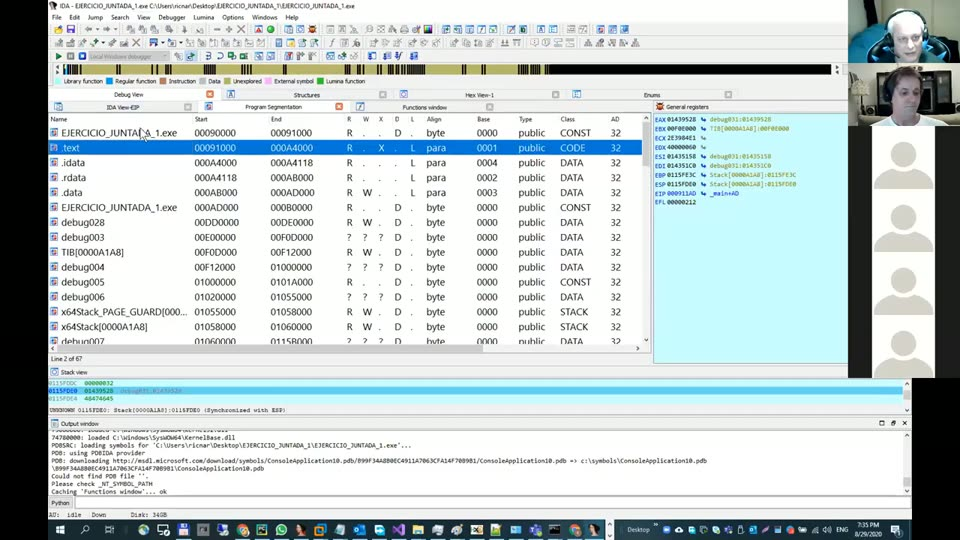
en, por eso, está ahí, en el inicio, ¿no es cierto? Sería, el principio de esta sección, sería, en, acá, por acá, él está en esta parte, una cosa así, en esto, por ahí, una cosa así, por eso, porque, bueno, no estás en la función, main, no detectó el main, es el problema, el, el, el, el, el IDA viejo, a veces no detecta el main, entonces, vos lo que tenés que hacer, para llegar acá, si no te detecta el main, es ir por las strings, ir view, open, sub view, strings, y entonces, buscas la string, control F, y pones, qué sé yo, nada, nada, una de esas, haces doble click, en nada, nada, te lleva ahí, y ahora X, y te lleva a la zona de donde está, donde estábamos al principio, vale, vale, o sea, por las strings, porque, el problema es que a veces los IDA viejos, no detectan bien el main, en algunos programas, en cambio, el IDA más nuevo, detecta cuál es el main, entonces a mí ya me lo abrió directamente el main, a vos no, entonces como no te lo abrió, te abrió el programa en cualquier lado, entonces, para ir a la zona donde está trabajando, tenés que buscar las strings, buscas esta string, o esta string, qué sé yo, y haces eso, buscas acá la string, buscas, qué sé yo, nada, nada, o alguna de esas, le das doble click, te sale ahí, y haces de vuelta click ahí, y apretás X, para ver de dónde es llamada, y te va a seguir a esta parte, que es la parte donde está la función, que es el main, lo que pasa es que como es un IDA viejo, no lo detectó, igual te recomiendo si tenés el IDA viejo, porque estás haciendo el curso viejo, lo que sea, en el curso, en la lista pasamos también los IDA más nuevos, o sea que podés instalar dos o tres en la misma máquina, podés tener el IDA 6.8, y el IDA 7, y los dos, los tres, los cuatro, no se conflictúan uno con otro, o sea, se instalan en distintas Mac, en distintas carpetas, y uno puede abrir uno, o otro, o otro, si uno está haciendo el curso de IDA, abrir el IDA 6.8, que se hizo con ese curso, y a veces hay cosas que está buena, abrir las con uno más nuevo, que detecta más cosas, ¿entendés? Vale, pues muchas gracias. Bueno, entonces acá, vemos que él agarra, y levanta otra vez el puntero ese, y busca el tercer byte, a partir del contenido de AX más 3, es el tercer byte, a partir de esa zona que reservó, o sea, uno, dos, tres, uno de estos bytes, vemos que sería ese VA, este VA que hay acá, y eso es una zona que no está inicializada,
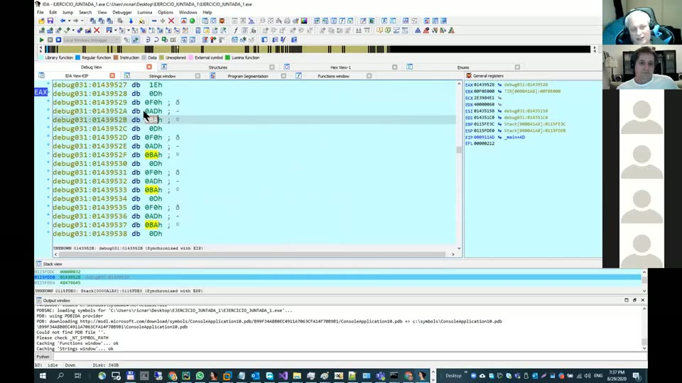
es una zona que, normalmente cuando uno hace buena programación, la lógica es inicializar la zona de memoria, o sea, que agarrar y poner a cero todos esos bytes, porque realmente, si vos lees algo que es basura, que está ahí en la memoria, cuando uno no está inicializada, es basura lo que hay ahí, por lo tanto, acá está leyendo un byte basura, porque no está inicializado, este bloque de 32 bytes, es todo lo que tiene ahí, que es esta basura, entonces, está leyendo un byte basura, y ese byte basura, lo pasa ahí a CL, que tiene este valor, vea, el CL es la parte baja de CX, es este valor VA, y vemos que lo va a imprimir, y te lo pone como value, lo agarra ahí, y lo imprime, ¿no? Value, entonces ahí te dice, value, VA, o sea, que agarró un byte basura que hay en la memoria, y lo puso ahí value, bueno, hay que ver esto después, qué influencia tiene, ¿no es cierto? porque esto puede influir, bueno, por ahora, lo único que vimos, es que alocó una dirección, una zona de memoria, y agarró un byte de la memoria, si puede ser cualquier cosa, que no sabemos qué valor puede tener, y lo imprimió, y después, ¿qué hace? acá vemos que, va a ir a la función chequea, ¿no? que es donde está la parte brava, entonces, bueno, acá esta cookie, es el 41, 42, 43, 44, vemos que acá, lo que hace en realidad es, en vez de pasarle el valor, le está pasando, es un truco también, le pasa el puntero, porque al usar LEA, o lo que estás haciendo, no es pasarle el valor, sino el puntero al valor, o sea, si yo acá veo que hay ahí, es 41, 42, 44, estoy pasándole, la dirección de memoria, de la variable cookie, o sea, que le estoy pasando el puntero al cookie, LEA, lo que hace, como ya saben, es sacar la dirección de memoria, o sea, que le pongo puntero al cookie, en vez de pasarle directamente, si yo hubiera hecho move cookie, a x, a x tendría 41, 42, 43, 44, que es el valor de cookie, pero al pasarle el puntero, lo que tengo es la dirección de memoria, donde está guardado cookie, y ahí por eso le puse p cookie, para diferenciarlo del valor de cookie, que es 41, 42, 43, 44, es esta dirección que la guarda ahí, bueno, después tengo el size, que también le pasa el puntero a size, acá veo que este es x, es el puntero a size, trabaja mucho con eso, p de size, recuerdo que el size era 49, ahí está el 49 guardado,
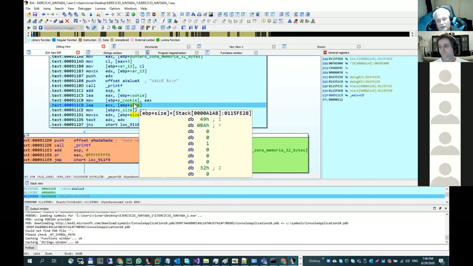
y vemos que a x también es una dirección de memoria, donde está el contenido de esa dirección de memoria, si voy ahí, vemos que es 49, o sea que está guardando, está trabajando con las direcciones de memoria de las variables, y después acá que hace, levanta size, acá levanta el valor de size 49, y hace move sx, cdx, acá hay un tema, acá vemos que, testea ese valor, y me dice, vemos acá, bueno, vemos que si no es cero, viene acá, a la zona esta, está bien, aparentemente es un valor, que si no es cero, viene a la, o sea, chequea el valor de ese size, y se fija si no es cero, y bueno, si no es cero, viene acá, y bueno, y ahora, ¿qué hace? le pasa el puntero a esa zona de memoria de 32 bytes, lo pasa ahí, va, chequea, va a chequear, bueno, ahí se me, hice f8, y le di rank, pero volvemos ahora hasta el mismo lugar, le doy de vuelta hasta ahí, pongo un break por acá, o f4, y llevo ahí de vuelta, y entro con f7, ¿no? y entonces acá, vemos que acá, al final termina comparando con esta constante, y si traseo, me voy a dar cuenta que, bueno, vemos que acá, acá, ¿qué hace? agarra y tiene, en realidad, como trabajó con punteros, está buscando el contenido, esto, hay que reversearlo un poco, porque no lo quiero enloquecer, porque son estructuras, pero vemos que acá leyó, el valor de cookie 1, lo tiene en ESI, ¿no es cierto? después agarra, y, le suma, a ESI, a ese 41, 42, 44, el valor, 45, 46, 47, 8, que está acá, en esta otra variable, 45, 46, 47, 48, o sea, que está sumando los dos primeros, los cuatro primeros bytes de estos, con estos cuatro primeros bytes que hay acá, y la suma la guarda en ESI, o sea, la suma de los dos, la guarda en ESI, es este valor, 8C, qué sé yo qué, y qué más, qué es este, este que hay acá, no sé, entonces ahí tiene la suma, y, ¿qué hacemos? después agarra, acá, ah, vemos que acá, está levantando, en SX hay una función, que se llama, isDevaggerPresent, que, es una función que me detecta, si el debugger está presente o no, que la sacó de acá, esta función, vemos que sacó de acá, isDevaggerPresent, ah, bueno, va a llamar a ver si está el debugger presente o no, es un truquito, o sea, que, si yo llamo a esta función,
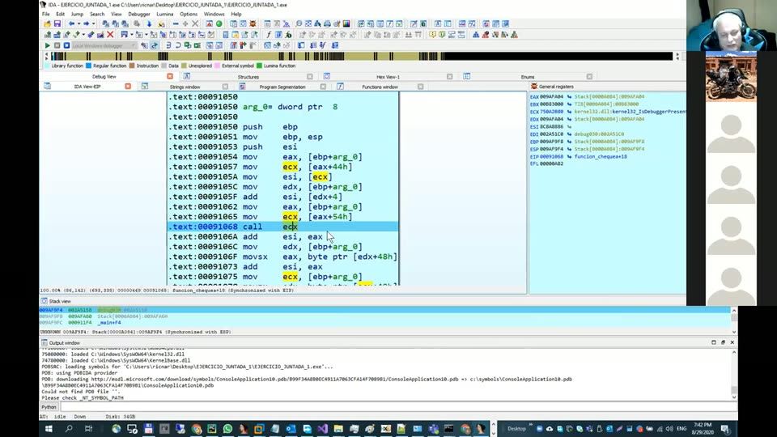
me devuelve uno, si estoy dentro de un debugger, y cero, si no estoy en un debugger, con lo cual, se lo suma a ESI, a la suma de los bytes que tenía antes, o sea, a estos dos, perdón, a los dos que yo había hecho, había sumado, estos cuatro primeros, con estos cuatro segundos, y ahora le sumo, ese uno, que está el debugger presente, pero tengo que tener cuidado, porque cuando lo corra fuera del debugger, este uno, va a ser cero, porque este es uno, si está dentro de un debugger, cero, si está, si está fuera del debugger, podemos ver acá, y hay, si ustedes esconden el debugger, con el comando hide, le va a dar cero, le va a funcionar, pero primero vamos a ver, cómo funciona la función, vemos acá, es debugger present, MSDN, es una función que chequea, ven, esta función no tiene parámetros, determina, si el proceso llamado, está siendo debuggeado, por un debugger user mode, vemos que llama, es debugger present, y si el proceso está siendo debuggeado, el valor no es cero, y si el proceso está debuggeado, si el proceso no está, no está siendo debuggeado, el valor es cero, si no está siendo debuggeado, y uno si está siendo, o uno distinto de cero, o sea que acá le está sumando un valor, que solamente ocurre, y si está dentro del debugger, no tendría que considerarlo yo, como parte de la suma, porque cuando esto, lo sume fuera del debugger, no va, acá va a ser cero, así que esto no lo tendría que sumar yo, o sea, lo veo acá, pero no lo voy a sumar después, en la suma final, y ese ESI, ¿qué pasa ahora? Ahora agarra y dice, bueno, agarra el 49, que era el size, que vemos que ahí está, se lo pasa a X, y se lo suma, o sea que suma el size también, el 49, se lo suma, suma el size, y vemos que después agarra el byte basura SBA, y se lo suma, y todo eso lo compara con esa constante, o sea, ¿qué hizo en resumida cuenta? Vamos a ver, notepad, notepad, entonces sumó, los cuatro primeros bytes, o sea, cuatro primeros bytes, más, más, cuatro segundos, segundos bytes, más el resultado de valor preces, bueno, en realidad no lo sumo, porque eso tendría que ser cero, más el size, que era, en este caso era 49, y, más, el valor basura,
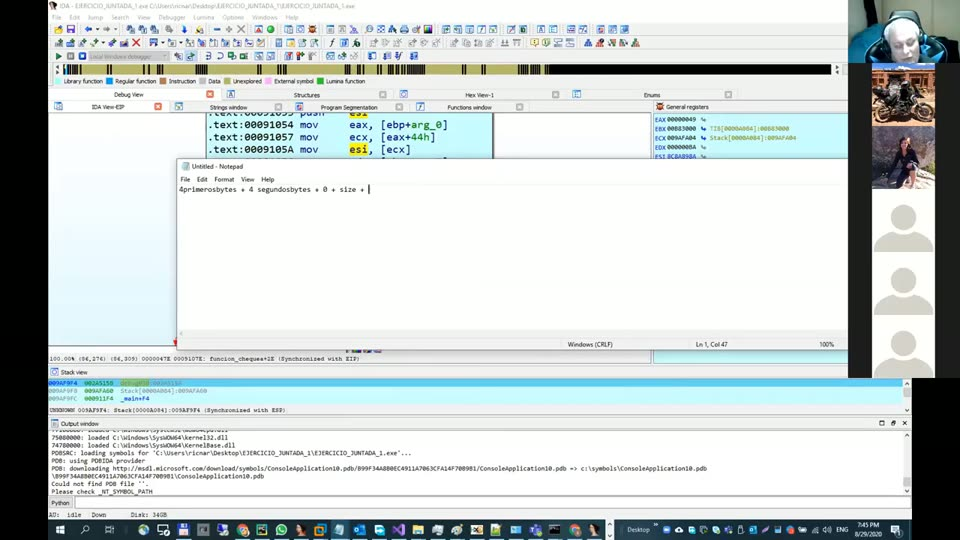
ese value, y eso me tiene que dar igual, para que esto sea bueno, me tiene que dar, este valor, 58, 54, bueno, no es muy difícil, ¿no? Este valor me tiene que dar eso, o sea, que los primeros cuatro bytes, con los segundos cuatro bytes, me tienen que dar esto, como son la suma de, bueno, size, puedo ponerlo cero, o sea, el noveno valor, lo puedo poner a cero, este ya, sé que es cero, porque está fuera del debugger, me quedaría ver este valor basura, pero yo poniendo este valor, por ejemplo, en el primer lugar, y haciendo que los segundos cuatro bytes sean cero, ya estaría cerca, o sea, por ejemplo, agarro acá, ¿no? Y, voy a editar el archivo, le pongo a los primeros cuatro bytes, el valor este al revés, ¿no es cierto? Sería, 33, o el little endian, 24, 55, 58, vemos que a ese le va a sumar, los segundos cuatro bytes, le pongo cero a los segundos cuatro bytes, y al size le pongo cero también, con eso, con eso solo, yo ya tengo, que esto, más esto, más esto, más esto me da cero, lo único que me puede afectar, sería este value, que vimos que era VA, tendría que restarle VA, pero, no sé, por si acaso, dejémoslo así, vamos a ver qué pasa, podemos hacer una prueba, y es, ver qué valor me da value, cuando está fuera del debugger, porque este value, puede variar también, como está en la memoria, y es basura, por ahí fuera del debugger, me da otra cosa, dentro del debugger, me da VA, el valor ese del heap, de la memoria, y quizás, mirándolo fuera del debugger, sea otra cosa, entonces, podemos, podemos parar acá, y ver qué valor me da, fuera del debugger, vamos a correrlo de vuelta, vemos que value, me da cero, vemos que value me da cero, esto todavía yo, esto, veo que no está, este no está editado, ah, yo edité otro, bueno, era este el que había que editar, bueno, ahora lo vamos a poner, bueno, pero vemos que el valor value me da cero, cuando está fuera del debugger, por lo tanto, yo tengo que considerar, cuando está fuera del debugger, entonces, vamos a editar bien el que está acá, parece que edité otro, ahí está, entonces, esto tendría que ser, 48, ah, no era así el valor, creo que lo escribí mal, estaba dentro de acá, el valor de la comparación, era, ah, 58, 55,
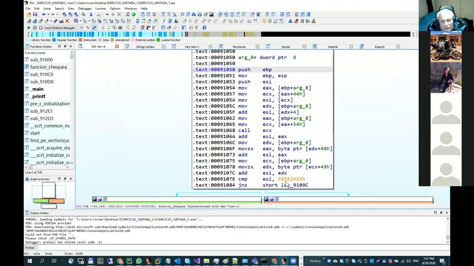
24, 33, tendría que ser, está mal, 58, cualquier cosa, 58, 55, 24, 33, ahora sí, ¿no? 58, 55, 24, 33, siempre se lee al revés, 58, 55, 24, 33, entonces ahora, vemos que, 58, 55, 24, 33, cookie 2, 0, size 0, y value 0, y no le gusta igual, ¿por qué? ¿por qué no le gusta? ¿qué es lo que está pasando acá? ¿algo más falta? Vamos a ver, vamos a trasearlo, vamos a ir de vuelta a trasearlo, ah, pero está tirando a nada, nada, porque size, no le gusta el size que es 0, porque size tiene que ser distinto de 0, bueno, le pongo 1, y le resto 1 al resto, porque el size no puede ser distinto de 0, entonces acá le pongo 1, y le resto acá 32, le saco 1, para que, digamos, se compense este 1, que yo le estoy sumando al final, y le saco un 1 al otro, ¿no es cierto? ahí está, chico, bueno, y esto es lo que tiene como truco, es que cuando lo corras dentro del debugger, vemos que esta es la solución, pero si yo lo corro dentro del debugger, si yo lo hago dentro del debugger, y tomo los valores dentro del debugger, después cuando lo corra fuera del debugger, no va a funcionar, porque yo le voy a estar sumando este value, que era BA, acuérdense que era BA, el 1 que era del debugger present, si lo miro así nomás, entonces fíjense que si yo lo vuelvo a correr, vamos a poner acá, vamos a poner el break por ahí, vamos a correrlo de vuelta en el debugger, bueno, vemos que ahí, lee los valores, vamos a ver que lee cookie, ahora cuando pasa por ahí, lee el cookie ese, que es el valor ese, el otro es 0, el 2 era 0, vemos que es 0, después lee el size, que era 1, el size que vemos que, en este caso todavía no lo leyó, ahora lo va a leer, 1, ahí está, es 1, y ahora, vemos que, lo imprime, hace malloc, y vemos que, lee el valor ese, que es el EAX más 3, que es BA, en este caso, si yo le sumo ese BA, al hacer la cuenta, después cuando lo corra fuera del debugger, no va a funcionar, así que este lo voy a poner a 0, lo voy a modificar, y voy a poner 0, para que, que es realmente lo que, lo que tiene el valor que, que tiene cuando, cuando está fuera del debugger,
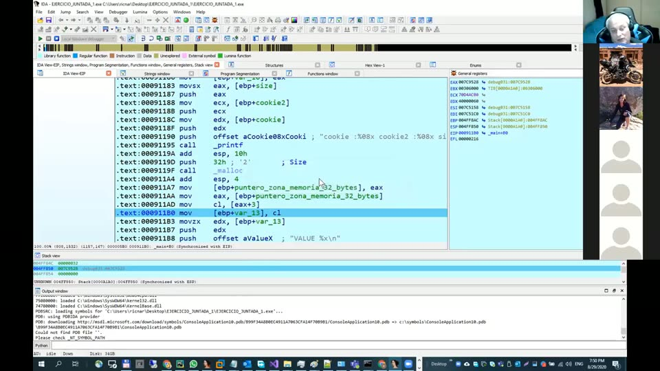
entonces ahora CL vale 0, como fuera del debugger, entonces imprime 0, de la misma forma, que estaría fuera del debugger, y ahora continúo, sigo, vemos que voy ahí, voy a función chequea, el col SXS, era un, un llamado is debugger present, me devuelve 1, acá yo lo tengo que cambiar a 0, porque fuera del debugger, va a ser 0, ahí está, entonces lo edito ahí, y ahora, vemos que hace la suma, va sumando, y cuando llega a ESI, va a valer lo mismo, porque, ves, 58, 55, 24, 33, y ahí sí me lleva, a, a buen chico, vemos que acá llega a buen chico, pero tuve que considerar, todos esos truquitos que tiene, para que corra fuera del debugger, porque si no, me va a correr dentro del debugger, y fuera no, ¿se entiende? ¿Alguien tiene alguna pregunta? Y acá, preguntó, Step Close, preguntó, si la activación de is debugger present, lo pusiste, como una protección en el exe, y yo le dije, que en realidad era un truquito, para que, para que la clave, no sea, si se fijan acá, en el código fuente, van a ver, que, cuando hace la suma, vemos que acá, dentro hace check, por acá tiene que estar, vemos que acá, is debugger present, está en la variable fu2, esa, y vemos que acá, dentro de la función check, esta que es la que llama para chequear, la llama ahí abajo, vemos que acá está la suma, y vemos que dentro de la suma, llama a esa fu2, que es la, is debugger present, entonces acá, esto, está devolviéndome un valor, que es distinto, dentro del debugger, que fuera del debugger, o sea, si está dentro del debugger, va a ser un 1, y si está fuera del debugger, va a ser un 0, así que yo, o tengo que, tengo que fijarme, porque si no, no me va a dar bien, y el otro valor distinto, a no ser que si ocultan el debugger, lo que pasa es que eso lo tenés que hacer, por ejemplo, el x64, tiene un comando ahí en la consola, que es hide, o hide, dvg, y entonces, el tipeando eso, ya, lo oculta de ese comando, así que funcionaría en ese caso, yo lo hice a mano, directamente, y después el otro valor, es este value2, que este value2, es el valor que sale de acá, del malloc,
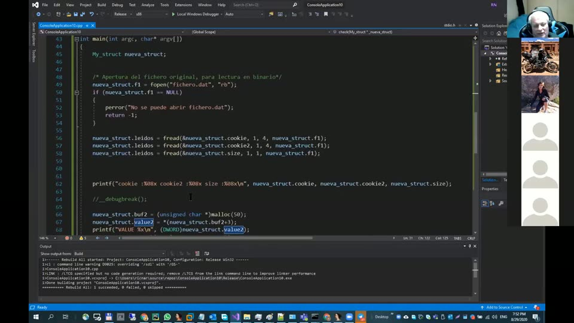
este, vemos que acá, es ese valor que hace malloc, value2, acá está, hace malloc, de 50, que es 32 hexa, y después lee el tercer byte, a partir de ahí, como no está inicializado, normalmente, el heap se inicializa distinto, en los debuggers, cuando lo arrancás el programa, en un debugger, que fuera del debugger, o sea, el heap, por eso estos valores, son distintos, dentro del debugger, y fuera del debugger, si uno quiere que el heap, se inicialice igual, fuera, y que dentro del debugger, tiene que atachear el programa, no arrancarlo desde el debugger, o poner otra cosa, que lo oculte, porque con esto, si no, te pueden detectar, si yo chequeo este byte, y digo, bueno, si no es cero, te tiro afuera, en el debugger no corre, porque este byte, es cero solamente, si está fuera del debugger, dentro del debugger, no va a ser cero, entonces, es una forma también, de detectar el debugger, chequear, un byte aleatorio, dentro de una locación, así, hecha por Maloc, sí, ¿alguna otra pregunta? desmutense, desmutense, ya terminamos los ejercicios, no vamos a hacer más ejercicios, así que bueno, ahora vienen las preguntas, pregunten lo que quieran, hagan su, como es, de qué les pareció el ejercicio, si les parece interesante, si les parece un plomo, qué sé yo, después lo pueden ver con tiempo, como esto está grabado, lo pueden ver con tiempo, mirarlo, analizarlo, es un ejercicio que tiene su miga, porque tiene ese truquito, a pesar de que es una suma, tiene el truquito de que estás, estás sumando valores que son diferentes, dentro del debugger, que fuera el debugger, dos trucos, tiene el de debugger present, y el de leer un valor no inicializado, de la memoria, en un maloc, a ver, escucho, escucho, preguntas, bueno, a mí lo que, lo que se me hace difícil es, poder detectar un call, cuando sale una dirección, y no saber cuál es la función, y a eso va un poco, también por experiencia, eso es un poco de experiencia, generalmente, eso no va a pasar, cuando el, si yo por ejemplo, esto lo hubiera, lo hubiera, por ejemplo, bueno, podemos hacer, por ejemplo, si yo le cambio acá la propiedad, y lo pongo, que en vez de multitread, sea multitread, DLL, para que veas la diferencia, multitread DLL, esto para, una cosa que te puede ayudar, es mirar los argumentos que tiene, se ve que tiene un formato, pero fíjate que yo lo voy a,
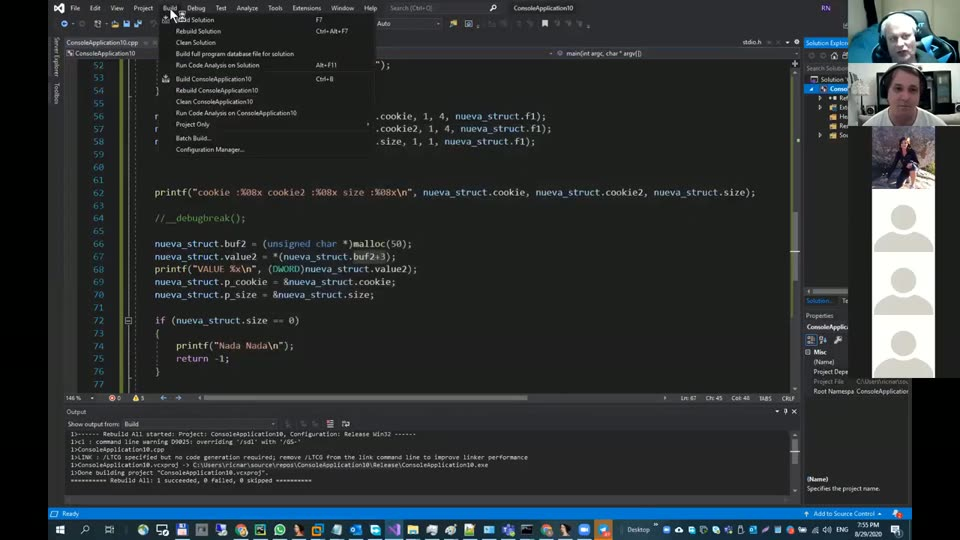
cuando hay porcentaje y algo, mirá que yo le hago revuel, ahora le hago revuel, lo estoy compilando de vuelta, pero ahora con las DLL separadas, a ver qué diferencia hay, y ahora lo voy a abrir en ida, con las DLL, bueno, le voy a sacar también los símbolos, porque, para que no lo, no lo, como es para que no use los símbolos, a ver qué, qué detecta, sin los símbolos, ves, el símbolo está acá de vuelta, este PDB, lo voy a borrar, y ahora lo voy a volver a, bueno, dale, borrate, bueno, ese borro, entonces acá está el ejecutable, ese es el ejecutable que acabo de compilar, sin las DLL embebidas, ve que es más chiquitito, este tiene 10K, mientras que el otro, el que hicimos recién, era más grande, ¿no es cierto?, porque tenía todas las DLL embebidas adentro, ahora lo voy a abrir de vuelta, en el ida, es más normal, digamos, este sería el compilado normal, esto lo voy a borrar, este IDB, entonces ahora lo abro, a ver si detecta Fopen, a ver qué detecta, le digo que no hay símbolos, va a tardar un poco, Fopen lo detectó, FRill lo detectó, FRill lo detectó, ven que Maloc lo detectó, creo que el print, el único que no detectó, porque el print, bueno, pero el print es fácil de darse cuenta, por los porcentajes, acá, cuando ves que tiene porcentaje algo, y aparte te das cuenta, que siempre llama al mismo, ves que acá hay, en ese caso hay porcentaje, pero siempre está llamando, a imprimir un string, ves que esta es una string, esta es una string, o sea, te das cuenta, por experiencia, pero en general, detectó más, ves que FRill lo detectó, fue mucho más preciso, por el hecho ya de, no tener las de LL embebida, ves que, inclusive, por ejemplo, a ver, dónde está acá dentro la función, bueno, acá printf, te das cuenta, inclusive si uno mira adentro, te das cuenta que llama una variante de printf, ese que es print, y después el chequeo, que está acá, el chequeo, vemos que, está buen chico, mal chico, el print, y acá el col es x, acá directamente, bueno, esta es una función que, obviamente, está resuelta en runtime, el is the bugger present, ¿no es cierto? Por eso, acá no la vas a ver, pero, por ahí, acá, más arriba, está por acá, en algún lado, bueno,
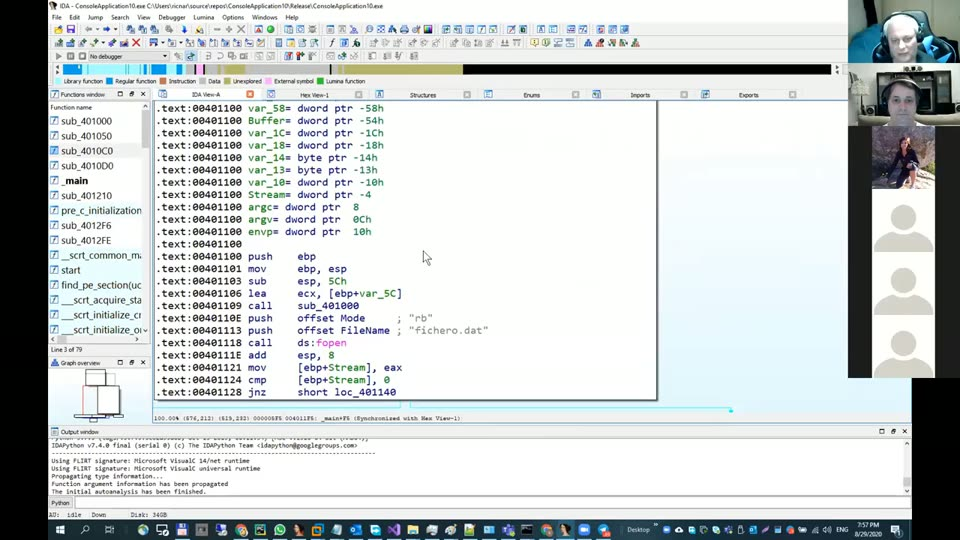
por ahí, no sé, habría que mirarlo, con un poquito más de, de tranquilidad, pero si yo veo imports, is the bugger present, tiene que estar por acá, acá está arriba, vemos que, veo dónde la usa, y vemos que acá, vemos que acá, acá es cuando la llama, y la guarda en esa variable, a x más 54, en esta función al principio, al inicializar el programa, la guarda ahí, y bueno, también es un poco de experiencia, y de práctica, ¿no? O sea, obviamente que, eso también es experiencia, uno sabe que, por ejemplo, fread, yo conozco, porque al conocerte, y tener más experiencia, sé que, si llama un archivo, fopen, busca un archivo, después, para fread, para leer el contenido, o para escribir, si es un archivo RB, tendrá que leer, es un poco experiencia eso, y por ver los argumentos, me doy cuenta, que tiene que haber un buffer, los size, y el cuarto, tiene que ser el, el, como es, el punterito, que devuelve, del handle, del archivo, ¿no? de fopen. O sea, que uno, también es experiencia, nada se aprende, en el momento, y cuanto uno más practica, más se va dando cuenta, las cosas, obviamente. Sí, ¿qué más? ¿Preguntas? ¿Preguntas? Aprovechen, después dicen, no, no, no, no, no quieren contestar, después, ya encontré la forma, de poner el breakpoint memory, con el script. Ah, bueno, dale, te paso, si tienen después alguna pregunta, sobre el mío, volvemos, pero, por click y darme el host a mí, sobre mi nombre, hace click derecho, set host, a ver, make host, ahí está. bueno, ahora, voy a sharear, mi pantalla, bueno, la cosa es así, era fácil, era, lo voy a copiar acá, no tengo acá, era cero, no uno, no, cero, cero es, si querés que cuando para, ya, o sea, que pare una vez sola, uno es cuando querés que pare cada vez que, viste que los breakpoint memory en Oli, también tenían, para one shot, ahora lo voy a pasar acá, el archivito, me lo dice, sí,
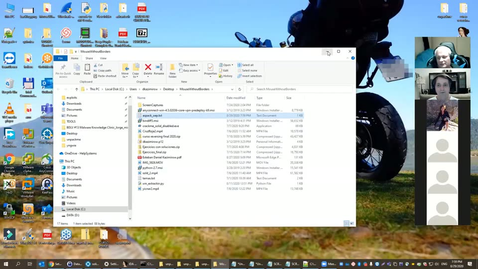
sí, sí, sí, hola, hola, se escucha, ¿no? sí, sí, se me fue el auriculado, bueno, es así, es, es el breakpoint memory en la dirección 404000, cero es para que pare una sola vez, y X en ejecución, por ejecución, y después, bueno, RRUN es como dar F9, hasta esta etiqueta, o sea, va a correr hasta que encuentre el breakpoint y pare, y cuando pare en el breakpoint memory, me va a decir que llegó al OEP y que vamos a dumpear, así que ahora voy a abrir el cosito ese, y lo vamos a probar, y de paso repasamos un poco, y de paso repasamos un poco, y de paso repasamos un poco, y de paso repasamos un poco, y de paso repasamos un poco, y de paso repasamos un poco, y de paso repasamos un poco, ¿Qué quiere decir el RAN después del RAN? RAN es como apretar F9, o apretar esta flechita, ves que es RAN, ahí marca. Pero creo que dice en el script. Ah, es RAN, es una orden, es una, a ver si acá está, es RAN, es como una instrucción del scripting, es RAN. Bien, solamente que veía dos líneas, una que decía RAN y la otra RAN. Fíjate, mostralo de vuelta, mostralo de vuelta. Sí, sí, ahora igual lo probamos, a ver, entonces, esperen, para cargar el script van a la ventanita de script, hacen clic derecho, load, y ahí lo seleccionan, ¿no? Lo seleccionan, este es ASPAC, ahí está. Sí, acá está el Breakpoint Memory. Claro, él dice por qué dice RAN sigue y abajo dice RAN de vuelta. Esto es que ejecute hasta que llegue a un Breakpoint, hasta que pare. Eso, eso, eso, en DBScript era EOB, Execute on Break. A ver. Pero si le sacás el RAN de abajo funciona igual, creo que si le sacás el RAN abajo del RAN, creo que funciona igual. No sé, a ver, me fijo. El RAN, ese abajo de RAN sigue. Esa es la duda, ese, comentalo.
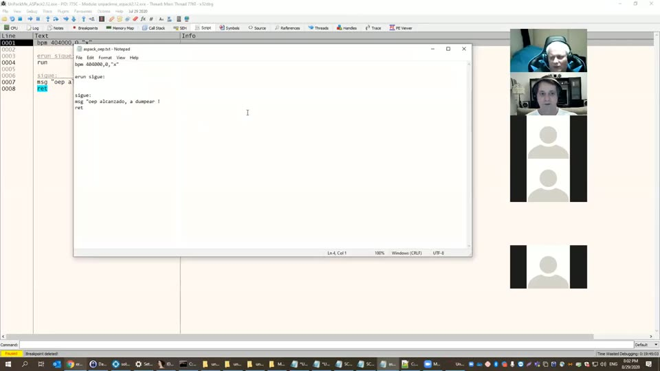
Pensé que funciona igual. Vamos a ver. Está de más. Ahí está. Bueno, lo pruebo ahí. Ven, estamos acá parados en el Entry Point, que es en la sección en donde está el Pushar. Acá, ahí, bueno, esto lo saco. No sé por qué me pone un Breakpoint ahí. Y te puso porque le pusiste el Breakpoint. No, pero todavía no lo ejecuté. Ah, habrá quedado de antes. Ahí está. Todavía no ejecuté nada acá. Ahí está. Ahí no hay ningún Breakpoint. Estoy en 411.000 y el Breakpoint Memory va a ser acá en 404.000. 404, 0 para que pare una sola vez. Y X por ejecución. Y aprieto la barra espaciadora y voy a volver rápido a la solapa de CPU, porque a Ricardo cuando me hizo en el curso, ¿te acordás que puse el Breakpoint Memory y no te andaba? Así que yo voy a apretar, ahora, aprieto la barra, no, voy a hacer así, run, ya está. A ver. No, y no funcionó, ¿ves? Me parece que tiene que tener... Y así, ejecutalo desde ahí. ¿Se puede ejecutar desde ahí? Sí, sí. Ejecutalo desde ahí, a ver. De acá. Bueno, es... No, me parece que tiene que tener el run, ¿ves? Porque yo, ves que no funciona. Bueno, ponelo. Sí, hay cosas que... Ahí está. Sí, porque el run le está indicando que tiene que parar cuando encuentres... Y el run es como que la ejecución final. O sea, que cuando pare, el run le dice, cuando pares, andá, sigue. Y después ejecutás, es como doble, ¿no? Bueno, ahí va. Bueno, no funciona, no funciona. No lo recargó, no lo recargó, el run, ¿no? No, no lo recargó. Lo acabo de probar en la otra máquina y funcionó. Pero no lo recargó, fíjate que no lo recargó, el run. Ah, reloja. Ahí está. Bueno, vamos de nuevo. Ahí está. Ahí está running, ¿ves? Acá abajo está running, ahí paró. Ahí me dice OLP alcanzado, a dampear, y está bien el OEP, ¿ves?
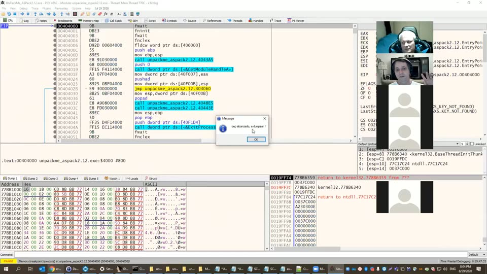
Ahí funcionó, le faltaba el run. Sí, porque creo que el run es el run efectivo, digamos, que es cómo ejecutar. Y el otro es cuando, el otro le está diciendo, cuando encuentres una excepción, anda a ese... Es como el EOB de Oliccript. EOB, etiqueta, y después run. Acá reemplazaron execute on break. O sea, quiere decir que ejecute hasta que pare, pero le tenés que decir que corra, porque si no, no va a salir. Es como decirle, ejecutá hasta que pare, y cuando pare anda ahí, pero ahora corre. Es como decirle, corre. Exacto, claro. En la programación nosotros tenemos, claro, eso sería como una directiva a los primeros, y lo otro sería como una instrucción. Claro, es algo del debugger, es como apretar F9. Acá lo que estás haciendo es automatizando lo que vos hiciste a mano. O sea, esto puso el breakpoint, y después con run le diste F9, nada más que con esto le dijiste que cuando pare en el breakpoint, te saque este mensaje. Es como condicionar el run, porque si no decir run, el programa corre solo y termina. Entonces va a decir run, pero fíjate, si llega a parar, anda ahí. Es como decirle eso. Si llega a haber un breakpoint o para por cualquier cosa, andate a ese tag, sigue. Es como que estás haciendo un run condicionado, condicionado a ese tag. Así que bueno, ahora yo se los voy a pasar para que lo practiquen, pero acuérdense cómo cargarlo. O sea, ustedes primero cargan el programa, van a la ventanita de script, hacen clic derecho, load, ahí lo eligen. Y una vez que lo eligieron, apretan, para ponerlo a correr, ahí les dice que es la barra espaciadora. Lo pueden trasear también, pero apretan barra espaciadora y van a CPU, y ahí van a ver abajo que dice running hasta que llega ahí al OEP. Ahí paró. Y en ese momento es cuando dumpean. Esto practiquenlo de dumpear, arreglar la IAT, así ya empiezan con el unpacking también, te pasa. Igual todas estas cosas, nosotros estamos haciendo los videos esos nuevos que estamos haciendo, que no son los del curso benéfico, sino los videos del curso abierto, que vamos por la tercera parte, todavía ni llegamos a unpacking ni nada, todo eso va a llegar y va a llegar despacito.
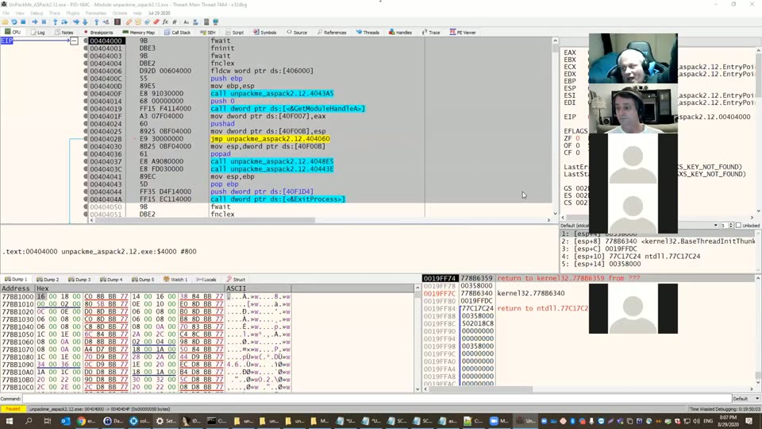
O sea que si alguno tiene alguna duda y todo, siga esos videos, que esos videos van a ir despacito, despacito. Y por supuesto esto que vimos ahora es muy posterior a cómo vamos en esos videos, que estamos recién empezando. Así que esto más que nada es para los que hicieron el curso benéfico, que ya vieron un poquito más. Pero el curso otro de los videos 3 están recién por las instrucciones, o sea que vamos empezando recién. Para llegar acá va a faltar bastante todavía, y se va despacio y se va tranquilo. Así que el que tiene alguna duda y le parece difícil esto, bueno, siga los videos esos del curso abierto, todo eso que va por el tercero, y ahí normalmente van a tener cómo ir más gradualmente. ¿No es cierto? Hoy quisimos practicar un poco. Habiendo esto van a poder desempacar UPX a mano, ASPAC y PACKER así que son sencillos, que no tienen destrucción de IAT ni cosas raras, lo van a poder desempacar ustedes solos. Y practiquen, hacer scriptsitos, vean si pueden encontrar otra forma de llegar al OVP. Eso tienen que ir jugando ustedes y bueno, y metiendo mano. Bueno, algunas últimas preguntas y ya después cerramos. Igual va a haber otras juntadas, ¿eh? Cada tanto, no sé. Cada 15 días vamos a juntar. Cada 15, 20 días nos vamos a juntar y vamos a ir haciendo otra práctica. A medida que vayan saliendo más videos y todo, vamos a ir haciendo práctica. A medida que les podemos subir un ejercicio y que cada uno trate de hacerlo y después nosotros... Claro, posiblemente hagamos eso. O sea, unos días antes de la juntada le pasamos un ejercicio para hacer algo fácil y lo intentan y después vienen y el que lo pudo hacer, alguno lo puede mostrar y los que no pudieron hacer, que muestren las dudas. Así ya directamente compartimos, ¿no es cierto? ¿Qué les parece la idea? Es para practicar y aprender. Dicen que estaría bueno. Bueno, pero hablen. No hablen. Desmutense. Buenísimo. Bueno. Espero que les haya gustado la juntada. Tratamos de ayudar y de... ¿Cómo es? Y de... Y pasar un buen rato. Y de a poquito. De pasar un buen rato, qué sé yo. Yo, por lo menos, pase un buen rato. Espero que les haya gustado. Nos vemos. Nos vemos la próxima. Ahora les paso por Telegram el ejercicio este con el script. Así, el que lo quiere practicar y lo quiere mirar, sí, lo puede ver. Nos vemos en la próxima juntada. Bueno, chicos, gracias a todos. Gracias, gracias a todos. Gracias a todos, muchachos.
Nos vemos. Gracias. Saludos. Chao. Gracias.